import numpy as np
import matplotlib.pyplot as plt
from scipy import stats
from scipy.special import expit as sigmoid # sigma(z) = 1 / (1 + e^{-z}), computed without overflow
plt.rcParams.update({"figure.dpi": 90, "axes.grid": True, "grid.alpha": 0.3,
"axes.spines.top": False, "axes.spines.right": False})
rng = np.random.default_rng(0)02 · Logistic Regression
Logistic regression is the classification counterpart of linear regression: the same linear score \(\boldsymbol{\theta}^\top\mathbf{x}\), turned into a probability. It is the default first model for any yes/no question (is this claim fraudulent? will this policy lapse?) and a strong one: it is fast, its loss is convex, its probabilities are usually well calibrated, and its coefficients can be read as odds ratios with confidence intervals.
What this note covers. The model (sigmoid, odds, log-odds), its loss (maximum likelihood), the gradient, convexity, gradient descent and Newton’s method (IRLS), what happens with separable data, standard errors and odds ratios, every classification metric of the slides (confusion matrix, precision and recall, ROC and AUC, PR curves, log-loss, Brier score, calibration) and how to choose the threshold. Then the assumptions of the model, how to check each one and what to do when it fails (section 14), and a deep dive into class imbalance (section 15).
What you need. Note 00 (train / validation / test sets, cross-validation) and note 01 (linear regression: the design matrix, gradient descent, the normal equation, convexity through the Hessian, least squares as maximum likelihood). From probability: a Bernoulli variable, independence, expectations and the normal distribution.
After this note you can fit a logistic regression from scratch with gradient descent or Newton’s method, read its coefficients as odds ratios with confidence intervals, evaluate a classifier with the metric that matches the business question, derive the threshold from the costs of the two errors, check the assumptions (linear log-odds, separation, events per variable, influential points, calibration) and deal with imbalanced classes without leaking information.
Notation. \(m\) examples \((\mathbf{x}^{(i)}, y^{(i)})\) with labels \(y^{(i)}\in\{0,1\}\); each \(\mathbf{x}^{(i)}\in\mathbb{R}^{n+1}\) has \(n\) features plus \(x_0 = 1\); the design matrix \(\mathbf{X}\in\mathbb{R}^{m\times(n+1)}\) has the \(\mathbf{x}^{(i)\top}\) as rows (first column of ones); \(\boldsymbol{\theta}\in\mathbb{R}^{n+1}\) are the parameters, \(\theta_0\) the intercept. The slides write \(g(z)\) for the sigmoid; this note writes \(\sigma(z)\).
Related notes: note 02b (logistic regression as one member of the family of generalised linear models), note 03 (regularisation, input variables), note 04 (more than two classes). Lab: logistic regression from scratch.
1. Problem statement
Many outputs are classes, not numbers: a tumour is malignant or benign, a heart attack occurs or not, a credit is accepted or not, an e-mail is spam or not, a review is positive or negative, a claim is fraudulent or legitimate. (There are also problems with more than two classes, such as hand-written digit recognition or signal classification: section 13 and note 04.)
Given \(m\) examples \((\mathbf{x}^{(i)}, y^{(i)})\) with \(y^{(i)} \in \{0, 1\}\), learn a model that outputs the probability that \(y=1\):
\[ h_{\boldsymbol{\theta}}(\mathbf{x}) \approx P(y = 1 \mid \mathbf{x}), \]
and then a class, by thresholding that probability.
Why not just fit linear regression to 0/1 labels? The first idea is to approximate \(y\) by the linear function \(h(\mathbf{x}) = \sum_{j=0}^n \theta_j x_j = \boldsymbol{\theta}^\top\mathbf{x}\), fitted by least squares (note 01), and to predict class 1 when \(h(\mathbf{x}) \ge 0.5\). Two things go wrong:
- \(\boldsymbol{\theta}^\top\mathbf{x}\) is unbounded: predictions like \(-0.3\) or \(1.4\) are not probabilities.
- Squared error punishes points that are correctly classified far from the boundary (a very positive score for a \(y=1\) point is “wrong” by MSE), so a few far-away points drag the boundary.
Try it. Nine tumours: sizes 0.4 to 2.6 are benign (\(y=0\)), 3.3 to 5.2 malignant (\(y=1\)). The least-squares line crosses 0.5 at size 2.92 and all nine are classified correctly. Now add one clearly malignant tumour of size 11: the line tilts to reach it, the crossing moves right to 3.55, and the malignant tumour of size 3.3 is now called benign (1 of 10 misclassified). One easy point made the classifier worse.
The example below shows the same problem on a larger sample: 30 negatives around 1, 30 positives around 4, and 10 more positives far away around 12. The far positives drag the line’s 0.5 crossing (printed below) to the right of the gap between the two groups, into the lower tail of the positives; the logistic boundary stays in the gap.
x1 = np.r_[rng.normal(1, 0.6, 30), rng.normal(4, 0.6, 30), rng.normal(12, 0.6, 10)]
y1 = np.r_[np.zeros(30), np.ones(40)]
X1 = np.c_[np.ones_like(x1), x1]
th_lin = np.linalg.lstsq(X1, y1, rcond=None)[0]
from sklearn.linear_model import LogisticRegression
lr1 = LogisticRegression(C=1e4).fit(x1[:, None], y1)
g = np.linspace(-1, 14, 300)
plt.figure(figsize=(8, 3.4))
plt.scatter(x1, y1, c=y1, cmap="coolwarm", edgecolor="k", s=25)
plt.plot(g, th_lin[0] + th_lin[1] * g, "C2", label="linear regression")
plt.plot(g, lr1.predict_proba(g[:, None])[:, 1], "C4", label="logistic regression")
plt.axvline((0.5 - th_lin[0]) / th_lin[1], color="C2", ls="--", lw=1)
plt.axvline(-lr1.intercept_[0] / lr1.coef_[0, 0], color="C4", ls="--", lw=1)
plt.axhline(0.5, color="gray", lw=0.8); plt.ylim(-0.3, 1.3); plt.legend(loc="center right")
plt.title("Far-away (but correct) points pull the linear-regression boundary; the logistic one does not move")
plt.xlabel("$x$"); plt.ylabel("$y$ / prediction"); plt.tight_layout(); plt.show()
print(f"0.5 crossing: linear regression x = {(0.5 - th_lin[0]) / th_lin[1]:.2f}, logistic regression x = {-lr1.intercept_[0] / lr1.coef_[0, 0]:.2f}")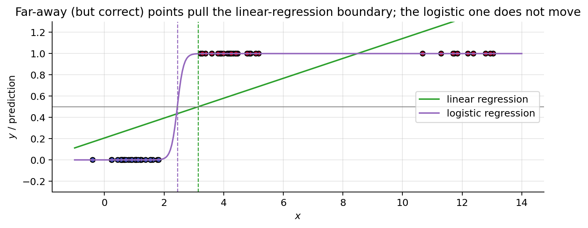
0.5 crossing: linear regression x = 3.14, logistic regression x = 2.452. The sigmoid function
The fix is to keep the linear score and squash it into \((0,1)\) with the sigmoid (or logistic) function:
\[ h_{\boldsymbol{\theta}}(\mathbf{x}) = \sigma(\boldsymbol{\theta}^\top\mathbf{x}) = \frac{1}{1+e^{-\boldsymbol{\theta}^\top\mathbf{x}}}, \qquad \sigma(z) = \frac{1}{1+e^{-z}} . \]
Because \(\sigma(z)\in(0,1)\), the output can be read as a probability: \(h_{\boldsymbol{\theta}}(\mathbf{x}) = P(y=1\mid\mathbf{x};\boldsymbol{\theta})\) and \(P(y=0\mid\mathbf{x};\boldsymbol{\theta}) = 1 - h_{\boldsymbol{\theta}}(\mathbf{x})\), and a threshold on it makes sense.
Properties (each one is used later):
- Range. \(\sigma(z) \in (0,1)\), \(\sigma(0) = \tfrac12\), \(\sigma(z)\to 1\) as \(z\to\infty\), \(\sigma(z)\to 0\) as \(z\to-\infty\). Proof: \(e^{-z} > 0\), so the denominator \(1+e^{-z}\) is larger than 1; at \(z=0\) it equals 2; \(e^{-z}\to 0\) as \(z\to\infty\) and \(e^{-z}\to\infty\) as \(z\to-\infty\).
- Symmetry: \(1 - \sigma(z) = \sigma(-z)\). Proof: \(1 - \frac{1}{1+e^{-z}} = \frac{e^{-z}}{1+e^{-z}} = \frac{1}{e^{z}+1} = \sigma(-z)\) (multiply numerator and denominator by \(e^{z}\)).
- Derivative: \(\sigma'(z) = \sigma(z)\big(1-\sigma(z)\big)\). Proof: \(\sigma'(z) = \frac{e^{-z}}{(1+e^{-z})^2} = \frac{1}{1+e^{-z}}\cdot\frac{e^{-z}}{1+e^{-z}} = \sigma(z)\,(1-\sigma(z))\), using \(\frac{d}{dz}(1+e^{-z})^{-1} = -(1+e^{-z})^{-2}\cdot(-e^{-z})\) and property 2 for the second factor.
- Inverse (the logit): if \(p = \sigma(z)\) then \(z = \log\frac{p}{1-p}\). Proof: \(p(1+e^{-z}) = 1 \Rightarrow e^{-z} = \frac{1-p}{p} \Rightarrow z = \log\frac{p}{1-p}\).
z = np.linspace(-8, 8, 400); s = 1 / (1 + np.exp(-z))
fig, axes = plt.subplots(1, 2, figsize=(11, 3.2))
axes[0].plot(z, s, lw=2); axes[0].axhline(0.5, color="gray", lw=0.8); axes[0].axvline(0, color="gray", lw=0.8)
axes[0].set_title(r"$\sigma(z)$"); axes[0].set_xlabel("$z$")
axes[1].plot(z, s * (1 - s), lw=2, color="C1"); axes[1].set_title(r"$\sigma'(z)=\sigma(z)(1-\sigma(z))$, max $1/4$ at $z=0$")
axes[1].set_xlabel("$z$"); plt.tight_layout(); plt.show()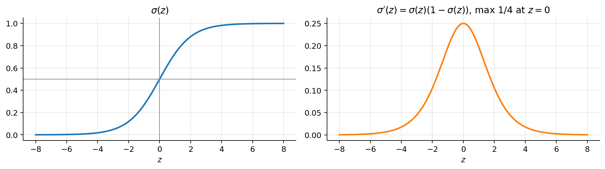
(In code we use scipy.special.expit, which is the same function computed without overflow when \(|z|\) is large.)
3. Odds, log-odds and the model
3.1 Odds: another way to say “how likely”
Let \(p\) be the probability that a claim is fraudulent. The odds of fraud are
\[ \text{odds} = \frac{p}{1-p} = \frac{\text{probability it happens}}{\text{probability it does not}} . \]
- \(p = 0.75\): odds \(= 0.75/0.25 = 3\), “three to one”: fraud is 3 times more likely than not.
- \(p = 0.5\): odds \(= 1\), “even”: as likely as not.
- \(p = 0.1\): odds \(= 0.1/0.9 = 0.11\): fraud is 9 times less likely than not.
Going back. Solve \(o = \frac{p}{1-p}\) for \(p\):
\[ \begin{aligned} o(1-p) &= p && \text{(multiply by } 1-p\text{)}\\ o &= p + o\,p = p\,(1+o) && \text{(move } o\,p \text{ to the right)}\\ p &= \frac{o}{1+o} && \text{(divide by } 1+o\text{)} \end{aligned} \]
Odds 3 give \(p = 3/4\). Odds live in \((0,\infty)\) and are lopsided: \(p=0.9\) gives odds 9 but \(p=0.1\) gives \(1/9 = 0.11\). They are hard to add or compare; the logarithm fixes that.
3.2 Log-odds (the logit) and its properties
\[ \operatorname{logit}(p) = \log\frac{p}{1-p}, \]
the logarithm of the odds, the log-odds. In logistic regression it is also called the score \(z\). Five properties:
- Range. \(p\in(0,1)\) → odds \(\in(0,\infty)\) → log-odds \(\in(-\infty,+\infty)\): any real number, exactly what a linear function \(\boldsymbol{\theta}^\top\mathbf{x}\) can produce.
- Zero in the middle. \(\operatorname{logit}(0.5) = \log 1 = 0\); positive when \(p > 0.5\), negative when \(p < 0.5\).
- Symmetric. Swapping the classes only flips the sign: \(\log\frac{1-p}{p} = -\log\frac{p}{1-p}\) (because \(\log(1/a) = -\log a\)).
- Products become sums. Multiplying the odds by \(c\) adds \(\log c\): \(\log(c\cdot\text{odds}) = \log c + \log(\text{odds})\).
- Its inverse is the sigmoid. Solve \(z = \log\frac{p}{1-p}\) for \(p\):
\[ \begin{aligned} e^{z} &= \frac{p}{1-p} && \text{(exponentiate both sides)}\\ e^{z} - p\,e^{z} &= p && \text{(multiply by } 1-p\text{)}\\ p &= \frac{e^{z}}{1+e^{z}} && \text{(collect } p\text{, divide by } 1+e^{z}\text{)}\\ &= \frac{1}{1+e^{-z}} = \sigma(z) && \text{(divide numerator and denominator by } e^{z}\text{)} \end{aligned} \]
Three names, one number: log-odds = logit = score \(z\). The sigmoid turns a score into a probability; the logit turns a probability back into a score.
p_tab = np.array([0.10, 0.25, 0.50, 0.75, 0.90])
print(" p | odds | log-odds")
for pv in p_tab:
print(f" {pv:.2f} | {pv / (1 - pv):5.2f} | {np.log(pv / (1 - pv)):+.2f}") p | odds | log-odds
0.10 | 0.11 | -2.20
0.25 | 0.33 | -1.10
0.50 | 1.00 | +0.00
0.75 | 3.00 | +1.10
0.90 | 9.00 | +2.20The table shows property 3 at work: \(p = 0.1\) and \(p = 0.9\) have log-odds \(-2.20\) and \(+2.20\).
3.3 The linear score is the log-odds
Apply the logit to \(p = h_{\boldsymbol{\theta}}(\mathbf{x}) = \sigma(\boldsymbol{\theta}^\top\mathbf{x})\); property 5 undoes the sigmoid, so the log-odds are linear in \(\mathbf{x}\):
\[ \log\frac{p}{1-p} = \boldsymbol{\theta}^\top\mathbf{x} = \theta_0 + \theta_1 x_1 + \dots + \theta_n x_n . \]
So logistic regression is a linear regression of the log-odds; that is where the name comes from.
Reading \(\theta_j\): the odds ratio. Increase \(x_j\) by one unit, keep the other features fixed, and compare the odds:
\[ \begin{aligned} \frac{\text{odds}(x_j+1)}{\text{odds}(x_j)} &= \frac{e^{\theta_0 + \dots + \theta_j (x_j+1) + \dots + \theta_n x_n}}{e^{\theta_0 + \dots + \theta_j x_j + \dots + \theta_n x_n}} && \text{(odds} = e^{\text{log-odds}}\text{)}\\ &= e^{\theta_j} && \text{(every other term cancels)} \end{aligned} \]
So one more unit of \(x_j\) multiplies the odds by \(e^{\theta_j}\), the odds ratio. E.g. \(\theta_j = 0.7\) means the odds roughly double per unit of \(x_j\) (\(e^{0.7} = 2.01\)).
The effect on the probability is not constant. By the chain rule and property 3 of the sigmoid,
\[ \frac{\partial p}{\partial x_j} = \sigma'(\boldsymbol{\theta}^\top\mathbf{x})\,\frac{\partial(\boldsymbol{\theta}^\top\mathbf{x})}{\partial x_j} = p\,(1-p)\,\theta_j , \]
which is largest at \(p = 0.5\), where it equals \(\theta_j/4\) (since \(p(1-p)\le\frac14\)). This is the divide-by-4 rule: a unit change in \(x_j\) moves the probability by at most about \(\theta_j/4\); far from \(p=0.5\) it moves it much less.
Worked example. A fraud model with one feature, the claim amount \(x\) in k€: \(\theta_0 = -3\), \(\theta_1 = 0.7\).
theta0, theta1 = -3.0, 0.7
print(" amount x | score z = -3 + 0.7 x | odds e^z | p = sigma(z) | change in p")
p_prev = None
for x_k in [3, 4, 5, 6]:
z_k = theta0 + theta1 * x_k; p_k = sigmoid(z_k)
change = "" if p_prev is None else f"{p_k - p_prev:+.2f}"
print(f" {x_k} k€ | {z_k:+.1f} | {np.exp(z_k):.2f} | {p_k:.2f} | {change}")
p_prev = p_k
print(f"odds ratio per k€: e^0.7 = {np.exp(theta1):.3f}; divide-by-4 bound: 0.7/4 = {theta1 / 4:.3f}") amount x | score z = -3 + 0.7 x | odds e^z | p = sigma(z) | change in p
3 k€ | -0.9 | 0.41 | 0.29 |
4 k€ | -0.2 | 0.82 | 0.45 | +0.16
5 k€ | +0.5 | 1.65 | 0.62 | +0.17
6 k€ | +1.2 | 3.32 | 0.77 | +0.15
odds ratio per k€: e^0.7 = 2.014; divide-by-4 bound: 0.7/4 = 0.175Each extra k€ adds 0.7 to the score and multiplies the odds by \(e^{0.7}\approx 2\); the probability moves by a different amount each time (+0.16, +0.17, +0.15), never more than \(0.7/4 = 0.175\).
4. Decision rule and decision boundary
To output a class, apply a threshold \(\tau\):
\[ \hat y = \begin{cases} 1 & \text{if } h_{\boldsymbol{\theta}}(\mathbf{x}) \ge \tau\\ 0 & \text{otherwise.}\end{cases} \]
A common threshold is \(\tau = 0.5\), but it is application specific:
- higher thresholds → fewer false positives (only confident positives are flagged), e.g. spam detection, where losing a real e-mail is worse than letting a spam through;
- lower thresholds → fewer false negatives (at the price of more false positives), e.g. medical image screening before the doctor looks, where missing a tumour is the costly error.
Section 12.9 derives the best \(\tau\) from the costs of the two errors.
Try it. The sigmoid (red) and the threshold (dashed). A score \(z = -3\) gives \(\sigma(-3) = 0.047\), below 0.5: class 0. A score \(z = 1\) gives \(\sigma(1) = 0.731\): class 1. Raise the threshold to 0.8 and the same point becomes class 0 (the spam filter). Lower it to 0.1 and a score of \(-1.5\), with \(\sigma(-1.5) = 0.182\), becomes class 1 (the screening test).
The decision boundary is a hyperplane. The logit is increasing (its derivative is \(\frac{1}{p(1-p)} > 0\)), so applying it to both sides of an inequality keeps the direction:
\[ \begin{aligned} h_{\boldsymbol{\theta}}(\mathbf{x}) \ge \tau &\iff \sigma(\boldsymbol{\theta}^\top\mathbf{x}) \ge \tau && \text{(definition of } h\text{)}\\ &\iff \boldsymbol{\theta}^\top\mathbf{x} \ge \operatorname{logit}(\tau) = \log\frac{\tau}{1-\tau} && \text{(apply the increasing logit; property 5)} \end{aligned} \]
For \(\tau = 0.5\) the right-hand side is \(\log 1 = 0\): \(h_{\boldsymbol{\theta}}(\mathbf{x}) \ge 0.5 \iff \boldsymbol{\theta}^\top\mathbf{x} \ge 0\). The decision boundary \(\{\mathbf{x} : \boldsymbol{\theta}^\top\mathbf{x} = \operatorname{logit}(\tau)\}\) is a hyperplane (a line in 2D), so logistic regression is a linear classifier. Changing \(\tau\) changes only the constant on the right: the boundaries for different thresholds are parallel hyperplanes with the same normal vector \((\theta_1,\dots,\theta_n)\). The sigmoid only turns the score, which is proportional to the signed distance to the \(\tau=0.5\) hyperplane, into a probability. Curved boundaries need non-linear features (note 03).
Try it. Two classes of 150 points each and a fitted logistic regression, \(\hat{\boldsymbol{\theta}} = (-6.2, 2.5, 5.4)\). At \(\tau = 0.5\) the boundary is the line \(\boldsymbol{\theta}^\top\mathbf{x} = 0\) and 153 points are predicted positive; at \(\tau = 0.9\) the line moves parallel towards the positive class (127 predicted positive); at \(\tau = 0.1\) it moves the other way (191 of the 300 points predicted positive: many more, though not “almost everything” as the last caption says).
5. The loss function: maximum likelihood
The cost of one example. Squared error with a sigmoid gives a non-convex cost (section 7). Instead we use the binary cross-entropy:
\[ L\big(h_{\boldsymbol{\theta}}(\mathbf{x}^{(i)}), y^{(i)}\big) = \begin{cases} -\log h_{\boldsymbol{\theta}}(\mathbf{x}^{(i)}) & \text{if } y^{(i)} = 1\\ -\log\big(1-h_{\boldsymbol{\theta}}(\mathbf{x}^{(i)})\big) & \text{if } y^{(i)} = 0\end{cases} \qquad\text{or in one line}\qquad L = -y^{(i)}\log h_{\boldsymbol{\theta}}(\mathbf{x}^{(i)}) - (1-y^{(i)})\log\big(1-h_{\boldsymbol{\theta}}(\mathbf{x}^{(i)})\big). \]
If \(y^{(i)}=1\), low probabilities are penalised very hard; if \(y^{(i)}=0\), high probabilities are. Near the wrong end, a small change in \(p\) makes a large change in the loss: confident mistakes cost a fortune. Where does this loss come from?
Probabilistic interpretation. Write \(p^{(i)} = h_{\boldsymbol{\theta}}(\mathbf{x}^{(i)})\). The model says \(y^{(i)}\) is a Bernoulli variable with parameter \(p^{(i)}\): \(P(y^{(i)}=1\mid\mathbf{x}^{(i)};\boldsymbol{\theta}) = p^{(i)}\) and \(P(y^{(i)}=0\mid\mathbf{x}^{(i)};\boldsymbol{\theta}) = 1 - p^{(i)}\). Both cases fit in one formula:
\[ P(y^{(i)} \mid \mathbf{x}^{(i)};\boldsymbol{\theta}) = \big(p^{(i)}\big)^{y^{(i)}}\big(1-p^{(i)}\big)^{1-y^{(i)}} . \]
(Plug in \(y=1\): you get \(p\); plug in \(y=0\): you get \(1-p\).) With \(m\) independent examples the likelihood of \(\boldsymbol{\theta}\) is the product
\[ L(\boldsymbol{\theta}) = P(\mathbf{y}\mid\mathbf{X};\boldsymbol{\theta}) = \prod_{i=1}^m \big(p^{(i)}\big)^{y^{(i)}}\big(1-p^{(i)}\big)^{1-y^{(i)}}, \]
and, since the logarithm turns products into sums and is increasing (same maximiser), it is easier to maximise the log-likelihood
\[ \ell(\boldsymbol{\theta}) = \log L(\boldsymbol{\theta}) = \sum_{i=1}^m \Big[y^{(i)}\log p^{(i)} + (1-y^{(i)})\log\big(1-p^{(i)}\big)\Big]. \]
Maximising \(\ell\) is minimising \(-\frac{1}{m}\ell\), which is the average of the per-example losses \(L\) above:
\[ \boxed{J(\boldsymbol{\theta}) = -\frac{1}{m}\,\ell(\boldsymbol{\theta}) = -\frac{1}{m}\sum_{i=1}^m \Big[y^{(i)}\log h_{\boldsymbol{\theta}}(\mathbf{x}^{(i)}) + (1-y^{(i)})\log\big(1-h_{\boldsymbol{\theta}}(\mathbf{x}^{(i)})\big)\Big]} \]
So, exactly as for linear regression (note 01, where least squares was the maximum likelihood under Gaussian noise), minimising \(J\) is maximum likelihood; only the noise model changed (Bernoulli instead of Gaussian). The independence of the examples is what allowed the product; it is an assumption of the model (section 14.1).
The loss as a function of the score. With \(z = \boldsymbol{\theta}^\top\mathbf{x}\) and a positive example, \(-\log\sigma(z) = -\log\frac{1}{1+e^{-z}} = \log(1+e^{-z})\). For a confident correct score (\(z\to+\infty\)) this goes to 0; for a confident wrong score (\(z\to-\infty\)) it behaves like \(-z\), so it grows linearly in how wrong the score is. For a negative example, by the symmetry property, the loss is \(\log(1+e^{z})\).
p = np.linspace(0.001, 0.999, 400)
fig, axes = plt.subplots(1, 2, figsize=(11, 3.4))
axes[0].plot(p, -np.log(p), label=r"$y=1$: $-\log p$")
axes[0].plot(p, -np.log(1 - p), label=r"$y=0$: $-\log(1-p)$")
axes[0].set_xlabel(r"predicted $p = h_\theta(x)$"); axes[0].set_ylabel("loss"); axes[0].set_ylim(0, 5); axes[0].legend()
axes[0].set_title("Per-example cross-entropy loss")
zz = np.linspace(-6, 6, 400)
axes[1].plot(zz, np.logaddexp(0, -zz), label=r"$y=1$: $\log(1+e^{-z})$")
axes[1].plot(zz, np.logaddexp(0, zz), label=r"$y=0$: $\log(1+e^{z})$")
axes[1].plot(zz[zz < 0], -zz[zz < 0], "k:", lw=1, label="asymptote $-z$")
axes[1].set_xlabel(r"score $z=\theta^\top x$"); axes[1].set_ylabel("loss"); axes[1].legend()
axes[1].set_title("Same loss against the score: linear growth for confident mistakes")
plt.tight_layout(); plt.show()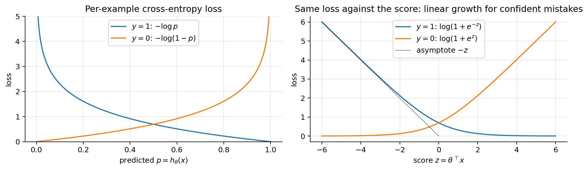
6. The gradient
We minimise \(J\) with gradient descent, so we need \(\partial J/\partial\theta_j\). Shorthand: \(h^{(i)} = h_{\boldsymbol{\theta}}(\mathbf{x}^{(i)}) = \sigma(z^{(i)})\) with \(z^{(i)} = \boldsymbol{\theta}^\top\mathbf{x}^{(i)}\).
\[ \begin{aligned} \frac{\partial J}{\partial\theta_j} &= \frac{\partial}{\partial\theta_j}\,\frac1m\sum_{i=1}^m\Big(-y^{(i)}\log h^{(i)}-(1-y^{(i)})\log\big(1-h^{(i)}\big)\Big) && \text{(definition of } J\text{)}\\ &= \frac1m\sum_{i=1}^m\Big(-\frac{y^{(i)}}{h^{(i)}}+\frac{1-y^{(i)}}{1-h^{(i)}}\Big)\,\frac{\partial h^{(i)}}{\partial\theta_j} && ((\log u)' = u'/u\text{; the minus sign inside } \log(1-h) \text{ flips the second sign)}\\ &= \frac1m\sum_{i=1}^m\frac{h^{(i)}-y^{(i)}}{h^{(i)}\big(1-h^{(i)}\big)}\cdot h^{(i)}\big(1-h^{(i)}\big)\cdot\frac{\partial z^{(i)}}{\partial\theta_j} && \text{(common denominator: } -y(1-h)+(1-y)h = h-y\text{; chain rule with } \sigma' = \sigma(1-\sigma)\text{)}\\ &= \frac1m\sum_{i=1}^m\big(h^{(i)}-y^{(i)}\big)\,x_j^{(i)} && \text{(the factors } h(1-h) \text{ cancel; } z=\textstyle\sum_k\theta_k x_k \text{ so } \partial z/\partial\theta_j = x_j\text{)} \end{aligned} \]
All components at once, with \(\sigma\) applied element-wise:
\[ \boxed{\nabla_{\boldsymbol{\theta}} J(\boldsymbol{\theta}) = \frac{1}{m}\sum_{i=1}^m\big(h_{\boldsymbol{\theta}}(\mathbf{x}^{(i)}) - y^{(i)}\big)\mathbf{x}^{(i)} = \frac{1}{m}\mathbf{X}^\top\big(\sigma(\mathbf{X}\boldsymbol{\theta}) - \mathbf{y}\big)} \]
The factor \(h(1-h)\) from the sigmoid cancels the denominator from the logarithm exactly; that cancellation is why cross-entropy and the sigmoid work so well together. It is the same formula as linear regression, “(prediction − target) × input”, with \(\sigma(\mathbf{X}\boldsymbol{\theta})\) in place of \(\mathbf{X}\boldsymbol{\theta}\). (This is no accident: both are generalised linear models with their “canonical” link, see note 02b.)
The code below implements \(J\) and \(\nabla J\) and checks the formula against centred finite differences, \(\frac{\partial J}{\partial\theta_j}\approx\frac{J(\boldsymbol{\theta}+\varepsilon\mathbf{e}_j)-J(\boldsymbol{\theta}-\varepsilon\mathbf{e}_j)}{2\varepsilon}\), on a small random problem.
def J(theta, X, y, eps=1e-12):
p = sigmoid(X @ theta)
return -np.mean(y * np.log(p + eps) + (1 - y) * np.log(1 - p + eps))
def grad_J(theta, X, y):
return X.T @ (sigmoid(X @ theta) - y) / len(y)
Xc = np.c_[np.ones(20), rng.normal(size=(20, 2))]; yc = rng.integers(0, 2, 20); th_c = np.array([0.3, -0.5, 1.2])
fd = np.array([(J(th_c + 1e-6 * e, Xc, yc) - J(th_c - 1e-6 * e, Xc, yc)) / 2e-6 for e in np.eye(3)])
print("analytic gradient :", grad_J(th_c, Xc, yc).round(8))
print("finite differences:", fd.round(8))analytic gradient : [ 0.1462418 -0.12410004 0.39409913]
finite differences: [ 0.1462418 -0.12410004 0.39409913]7. Convexity, step by step
What we must show. \(J\) is convex if its Hessian \(\mathbf{H}\) (the matrix of second derivatives, \(H_{jk} = \partial^2 J/\partial\theta_j\partial\theta_k\)) satisfies \(\mathbf{v}^\top\mathbf{H}\mathbf{v}\ge 0\) for every vector \(\mathbf{v}\) (positive semi-definite). Same test as for linear regression, where \(\mathbf{H} = \frac1m\mathbf{X}^\top\mathbf{X}\) (note 01).
Step 1 · the gradient (section 6), one component: \(\frac{\partial J}{\partial\theta_j} = \frac1m\sum_{i=1}^m\big(h^{(i)}-y^{(i)}\big)\,x_j^{(i)}\).
Step 2 · differentiate again, now with respect to \(\theta_k\). Only \(h^{(i)}\) depends on \(\boldsymbol{\theta}\); \(y^{(i)}\) and \(x_j^{(i)}\) are data:
\[ H_{jk} = \frac{\partial^2 J}{\partial\theta_j\,\partial\theta_k} = \frac1m\sum_{i=1}^m\frac{\partial h^{(i)}}{\partial\theta_k}\,x_j^{(i)} . \]
Step 3 · chain rule with \(h = \sigma(z)\) and \(\sigma' = \sigma(1-\sigma)\): \(\;\frac{\partial h^{(i)}}{\partial\theta_k} = \sigma'(z^{(i)})\,\frac{\partial z^{(i)}}{\partial\theta_k} = h^{(i)}\big(1-h^{(i)}\big)\,x_k^{(i)}\).
Step 4 · put it together. Write \(s_i = h^{(i)}(1-h^{(i)})\):
\[ H_{jk} = \frac1m\sum_{i=1}^m s_i\,x_j^{(i)}x_k^{(i)} \qquad\Longrightarrow\qquad \mathbf{H} = \nabla^2 J(\boldsymbol{\theta}) = \frac1m\sum_{i=1}^m s_i\,\mathbf{x}^{(i)}\mathbf{x}^{(i)\top} = \frac1m\mathbf{X}^\top\mathbf{S}\mathbf{X}, \qquad \mathbf{S} = \mathrm{diag}(s_1,\dots,s_m). \]
Unlike linear regression, \(\mathbf{H}\) depends on \(\boldsymbol{\theta}\) (through the \(s_i\)), so there is no closed form. But we only need its sign.
Step 5 · test with an arbitrary vector \(\mathbf{v}\).
\[ \mathbf{v}^\top\mathbf{H}\mathbf{v} = \frac1m\sum_{i=1}^m s_i\,\mathbf{v}^\top\mathbf{x}^{(i)}\mathbf{x}^{(i)\top}\mathbf{v} = \frac1m\sum_{i=1}^m s_i\,\big(\mathbf{v}^\top\mathbf{x}^{(i)}\big)^2 , \]
because \(\mathbf{v}^\top\mathbf{x}^{(i)}\) is a number and \(\mathbf{x}^{(i)\top}\mathbf{v}\) is the same number, so their product is a square.
Step 6 · every term is \(\ge 0\). \(s_i = h^{(i)}(1-h^{(i)}) > 0\) because \(0 < h^{(i)} < 1\) (sigmoid property 1); \((\mathbf{v}^\top\mathbf{x}^{(i)})^2 \ge 0\) because it is a square; \(\frac1m > 0\). A sum of non-negative terms is non-negative, so \(\mathbf{v}^\top\mathbf{H}\mathbf{v}\ge 0\) for every \(\mathbf{v}\): \(\mathbf{H}\) is positive semi-definite and \(J\) is convex. \(\blacksquare\)
Strict convexity. If the columns of \(\mathbf{X}\) are linearly independent, then \(\mathbf{v}\neq\mathbf{0}\) implies \(\mathbf{X}\mathbf{v}\ne\mathbf{0}\), i.e. some \(\mathbf{v}^\top\mathbf{x}^{(i)} \ne 0\); that term of the sum is strictly positive (as \(s_i>0\)), so \(\mathbf{v}^\top\mathbf{H}\mathbf{v} > 0\) and the minimum, if it exists, is unique.
What we gain. One bowl: every local minimum is the global minimum, and gradient descent (with a small enough \(\alpha\)) and Newton’s method reach it from any starting point. One caveat: convex does not mean that the minimum is reached; with separable data \(J\) keeps decreasing forever (section 10).
Why not use MSE with a sigmoid? Take one positive example and the loss as a function of the score, \(f(z) = \frac12(\sigma(z) - 1)^2\). Differentiate twice, writing \(\sigma\) for \(\sigma(z)\):
\[ \begin{aligned} f'(z) &= (\sigma - 1)\,\sigma' && \text{(chain rule)}\\ f''(z) &= \sigma'^2 + (\sigma-1)\,\sigma'' && \text{(product rule)}\\ &= \sigma^2(1-\sigma)^2 - (1-\sigma)\,\sigma(1-\sigma)(1-2\sigma) && (\sigma' = \sigma(1-\sigma),\ \sigma'' = \sigma'(1-2\sigma))\\ &= \sigma(1-\sigma)^2\,\big(3\sigma - 1\big) && \text{(factor out } \sigma(1-\sigma)^2\text{)} \end{aligned} \]
It is negative whenever \(\sigma(z) < 1/3\), i.e. for \(z < \log\frac12 = -0.69\): the MSE loss is concave exactly for the confident mistakes, so sums of such terms have plateaus and can have local minima. Its gradient \(f'(z) = (\sigma-1)\sigma(1-\sigma)\) also contains the factor \(\sigma'(z)\), which vanishes for confident wrong predictions: the model learns slowly exactly when it is most wrong. With cross-entropy, that factor cancels (section 6) and \(\frac{d^2}{dz^2}\log(1+e^{-z}) = \sigma(1-\sigma) > 0\).
# One example with y=1, x=1: loss as a function of the single parameter theta
t = np.linspace(-10, 10, 400)
fig, axes = plt.subplots(1, 2, figsize=(11, 3.2))
axes[0].plot(t, -np.log(sigmoid(t))); axes[0].set_title(r"cross-entropy $-\log\sigma(\theta)$: convex")
axes[1].plot(t, 0.5 * (sigmoid(t) - 1) ** 2, color="C3"); axes[1].set_title(r"MSE $\frac{1}{2}(\sigma(\theta)-1)^2$: not convex, flat when very wrong")
axes[1].axvline(np.log(0.5), color="gray", ls="--", lw=1)
for ax in axes: ax.set_xlabel(r"$\theta$")
plt.tight_layout(); plt.show()
(The dashed line marks \(z = \log\frac12\): to its left the MSE curve is concave.)
8. Batch gradient descent
Repeat until convergence, updating all parameters simultaneously (\(j = 0,\dots,n\)):
\[ \theta_j := \theta_j - \alpha\,\frac{\partial J}{\partial\theta_j} = \theta_j - \alpha\,\frac1m\sum_{i=1}^m\big(h_{\boldsymbol{\theta}}(\mathbf{x}^{(i)}) - y^{(i)}\big)x_j^{(i)}, \qquad\text{vectorised:}\qquad \boldsymbol{\theta} \leftarrow \boldsymbol{\theta} - \frac{\alpha}{m}\mathbf{X}^\top\big(\sigma(\mathbf{X}\boldsymbol{\theta}) - \mathbf{y}\big). \]
It looks exactly like linear regression, with its own non-linear hypothesis. Everything from note 01 applies: standardise the features, choose \(\alpha\) by watching \(J\) decrease (too large → oscillation; too small → slow). A safe step size. Since \(s_i = \sigma'(z^{(i)}) \le \tfrac14\), the Hessian (section 7) satisfies \(\mathbf{v}^\top\mathbf{H}\mathbf{v} \le \frac{1}{4}\,\mathbf{v}^\top\big(\frac1m\mathbf{X}^\top\mathbf{X}\big)\mathbf{v}\), so its largest eigenvalue is at most \(\frac14\lambda_{\max}(\frac1m\mathbf{X}^\top\mathbf{X})\). Gradient descent on a function whose Hessian eigenvalues never exceed \(L\) decreases \(J\) for any \(\alpha < 2/L\) (the bound of note 01), so any \(\alpha < 8/\lambda_{\max}(\frac1m\mathbf{X}^\top\mathbf{X})\) is stable.
Try it. Sixty points in one dimension, gradient descent with \(\alpha = 0.5\) on the standardised feature, starting at \(\boldsymbol{\theta} = \mathbf{0}\). At iteration 0 the model says \(p = 0.5\) for everyone, so \(J = \log 2 = 0.693\). The S-curve forms within a few iterations (\(J = 0.434\) at iteration 5); \(J\) is still falling at iteration 30 (\(0.276\)) and has flattened out by 200 (\(0.247\)).
Now the same in code on a two-feature problem, with three learning rates, all below the stability bound that the code prints.
from sklearn.datasets import make_classification
Xr, y = make_classification(n_samples=400, n_features=2, n_redundant=0, n_informative=2,
n_clusters_per_class=1, class_sep=1.0, flip_y=0.05, random_state=3)
mu, sd = Xr.mean(0), Xr.std(0)
X = np.c_[np.ones(len(y)), (Xr - mu) / sd] # standardise, then add the column of ones
def gradient_descent(X, y, alpha, n_iters):
theta = np.zeros(X.shape[1]); costs = [J(theta, X, y)]
for _ in range(n_iters):
theta -= alpha * grad_J(theta, X, y); costs.append(J(theta, X, y))
return theta, costs
fig, axes = plt.subplots(1, 3, figsize=(15, 4))
for a in [0.05, 0.5, 5.0]:
th, c = gradient_descent(X, y, a, 300); axes[0].plot(c, label=rf"$\alpha={a}$")
axes[0].set_xlabel("iteration"); axes[0].set_ylabel(r"$J(\theta)$"); axes[0].legend(); axes[0].set_title("Cost per iteration")
theta, _ = gradient_descent(X, y, 0.5, 3000)
print("theta =", theta.round(3))
sk = LogisticRegression(C=1e10).fit(X[:, 1:], y)
print("sklearn (C=1e10, i.e. no penalty):", np.r_[sk.intercept_, sk.coef_[0]].round(3))
print(f"stable if alpha < 8 / lambda_max(X^T X / m) = {8 / np.linalg.eigvalsh(X.T @ X / len(y)).max():.2f}")
g1, g2 = np.meshgrid(np.linspace(-3.5, 3.5, 300), np.linspace(-3.5, 3.5, 300))
P = sigmoid(theta[0] + theta[1] * g1 + theta[2] * g2)
for ax, show_p in zip(axes[1:], [False, True]):
if show_p:
cs = ax.contourf(g1, g2, P, levels=20, cmap="coolwarm", alpha=0.8); plt.colorbar(cs, ax=ax, label=r"$P(y=1|x)$")
ax.scatter(X[:, 1], X[:, 2], c=y, cmap="coolwarm", edgecolor="k", s=15)
ax.contour(g1, g2, P, levels=[0.5], colors="k", linewidths=2)
ax.set_xlabel(r"$\tilde x_1$"); ax.set_ylabel(r"$\tilde x_2$")
axes[1].set_title(r"Decision boundary $\theta^\top x = 0$"); axes[2].set_title("Predicted probability surface")
plt.tight_layout(); plt.show()theta = [-0.334 -4.702 -0.919]
sklearn (C=1e10, i.e. no penalty): [-0.332 -4.702 -0.916]
stable if alpha < 8 / lambda_max(X^T X / m) = 6.73
9. Newton’s method and IRLS
Setting the gradient to zero gives \(\mathbf{X}^\top\sigma(\mathbf{X}\boldsymbol{\theta}) = \mathbf{X}^\top\mathbf{y}\). The unknown is inside a non-linear function, so there is no normal equation: we iterate. Gradient descent uses only the slope. Newton’s method also uses the curvature: approximate \(J\) around the current \(\boldsymbol{\theta}\) by its second-order Taylor expansion and jump to the minimum of that quadratic.
\[ \begin{aligned} J(\boldsymbol{\theta}+\boldsymbol{\delta}) &\approx J(\boldsymbol{\theta}) + \nabla J^\top\boldsymbol{\delta} + \tfrac12\,\boldsymbol{\delta}^\top\mathbf{H}\,\boldsymbol{\delta} && \text{(Taylor expansion to second order)}\\ \nabla J + \mathbf{H}\boldsymbol{\delta} &= \mathbf{0} && \text{(set the derivative with respect to } \boldsymbol{\delta} \text{ to zero; } \mathbf{H} \text{ is symmetric)}\\ \boldsymbol{\delta} &= -\mathbf{H}^{-1}\nabla J && \text{(solve; } \mathbf{H} \text{ invertible when } \mathbf{X} \text{ has independent columns)}\\ \boldsymbol{\theta}_{\text{new}} &= \boldsymbol{\theta} - \big(\mathbf{X}^\top\mathbf{S}\mathbf{X}\big)^{-1}\mathbf{X}^\top\big(\mathbf{p}-\mathbf{y}\big) && (\nabla J = \tfrac1m\mathbf{X}^\top(\mathbf{p}-\mathbf{y}),\ \mathbf{H} = \tfrac1m\mathbf{X}^\top\mathbf{S}\mathbf{X}\text{; the } \tfrac1m \text{ cancel)} \end{aligned} \]
where \(\mathbf{p} = \sigma(\mathbf{X}\boldsymbol{\theta})\) and \(\mathbf{S} = \mathrm{diag}(p_i(1-p_i))\), both evaluated at the current \(\boldsymbol{\theta}\).
Why it is called IRLS (iteratively reweighted least squares). Write \(\boldsymbol{\theta} = (\mathbf{X}^\top\mathbf{S}\mathbf{X})^{-1}\mathbf{X}^\top\mathbf{S}\mathbf{X}\boldsymbol{\theta}\) and combine the two terms:
\[ \begin{aligned} \boldsymbol{\theta}_{\text{new}} &= \big(\mathbf{X}^\top\mathbf{S}\mathbf{X}\big)^{-1}\Big[\mathbf{X}^\top\mathbf{S}\mathbf{X}\boldsymbol{\theta} + \mathbf{X}^\top(\mathbf{y}-\mathbf{p})\Big] && \text{(common factor } (\mathbf{X}^\top\mathbf{S}\mathbf{X})^{-1}\text{)}\\ &= \big(\mathbf{X}^\top\mathbf{S}\mathbf{X}\big)^{-1}\mathbf{X}^\top\mathbf{S}\Big[\mathbf{X}\boldsymbol{\theta} + \mathbf{S}^{-1}(\mathbf{y}-\mathbf{p})\Big] && \text{(factor out } \mathbf{X}^\top\mathbf{S}\text{; } \mathbf{S} \text{ is diagonal with positive entries)}\\ &= \big(\mathbf{X}^\top\mathbf{S}\mathbf{X}\big)^{-1}\mathbf{X}^\top\mathbf{S}\,\mathbf{z}_w, \qquad z_{w,i} = \boldsymbol{\theta}^\top\mathbf{x}^{(i)} + \frac{y^{(i)} - p_i}{p_i(1-p_i)} && \text{(define the working response)} \end{aligned} \]
The last line is the weighted normal equation: the solution of the weighted least-squares problem \(\min_{\boldsymbol{\theta}}\sum_i s_i\,(z_{w,i} - \boldsymbol{\theta}^\top\mathbf{x}^{(i)})^2\) (differentiate as in note 01, with weights \(s_i\): \(\mathbf{X}^\top\mathbf{S}(\mathbf{z}_w - \mathbf{X}\boldsymbol{\theta}) = \mathbf{0}\)). So each Newton step is a linear regression of a “working response” \(\mathbf{z}_w\) (a linearised log-odds of the labels) with weights \(s_i = p_i(1-p_i)\), and the weights change at every iteration. Points with \(p_i\) near 0 or 1 get small weights: they are already explained.
Cost and speed. Each Newton step costs \(O(mn^2 + n^3)\) (form and solve an \((n+1)\times(n+1)\) system) against \(O(mn)\) for a gradient step, but near the optimum Newton converges quadratically: the number of correct digits roughly doubles at every step. For up to a few thousand features it is the method of choice (scikit-learn’s newton-cg, and lbfgs, its default, a quasi-Newton method that builds an approximation of \(\mathbf{H}\) from past gradients).
def newton_logistic(X, y, n_iter=25, tol=1e-10):
"""Newton's method (= IRLS) for the unpenalised logistic regression."""
theta = np.zeros(X.shape[1]); grad_norms = []
for _ in range(n_iter):
p_ = sigmoid(X @ theta)
grad = X.T @ (p_ - y) / len(y) # nabla J
grad_norms.append(np.abs(grad).max())
if grad_norms[-1] < tol: break
H = X.T @ ((p_ * (1 - p_))[:, None] * X) / len(y) # (1/m) X^T S X
theta = theta - np.linalg.solve(H, grad) # Newton step
return theta, grad_norms
theta_nt, gn_newton = newton_logistic(X, y)
th_gd, gn_gd = np.zeros(3), []
for _ in range(3000):
gr = grad_J(th_gd, X, y); gn_gd.append(np.abs(gr).max()); th_gd -= 0.5 * gr
print(f"Newton: {len(gn_newton) - 1} steps to max|grad J| < 1e-10, theta = {theta_nt.round(4)}")
print(" max|grad J| after each step:", " ".join(f"{v:.0e}" for v in gn_newton))
print(f"GD (alpha = 0.5): {next(k for k, v in enumerate(gn_gd) if v < 1e-6)} iterations to max|grad J| < 1e-6")
# one IRLS step from theta = 0 is a weighted least-squares fit of the working response
p0 = sigmoid(X @ np.zeros(3)); s0 = p0 * (1 - p0); zw = X @ np.zeros(3) + (y - p0) / s0
wls = np.linalg.lstsq(np.sqrt(s0)[:, None] * X, np.sqrt(s0) * zw, rcond=None)[0]
print("first Newton step:", np.linalg.solve(X.T @ (s0[:, None] * X), X.T @ (y - p0)).round(4), " WLS on working response:", wls.round(4))
plt.figure(figsize=(6.5, 3.4))
plt.semilogy(gn_gd, label=r"gradient descent, $\alpha=0.5$"); plt.semilogy(gn_newton, "o-", label="Newton / IRLS")
plt.xlabel("iteration"); plt.ylabel(r"$\max_j |\partial J/\partial\theta_j|$"); plt.xlim(-5, 400); plt.legend()
plt.title("Newton converges in a handful of steps"); plt.tight_layout(); plt.show()Newton: 8 steps to max|grad J| < 1e-10, theta = [-0.3337 -4.7024 -0.919 ]
max|grad J| after each step: 4e-01 1e-01 4e-02 1e-02 2e-03 2e-04 1e-06 1e-10 8e-18
GD (alpha = 0.5): 2168 iterations to max|grad J| < 1e-6
first Newton step: [-0.04 -1.8392 -0.2628] WLS on working response: [-0.04 -1.8392 -0.2628]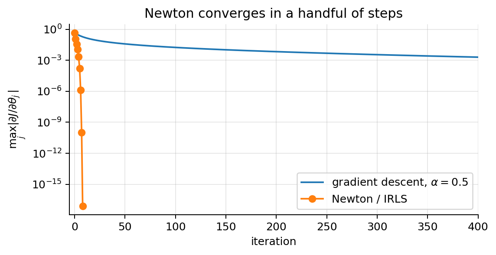
Gradient descent shrinks the gradient by a roughly constant factor per iteration (a straight line on the log scale) and needs about two thousand iterations to reach \(10^{-6}\); Newton’s gradient norms fall faster and faster (the exponent roughly doubles in the last steps), the signature of quadratic convergence, and it reaches \(10^{-10}\) in a handful of steps. The first Newton step and the weighted least-squares fit of the working response coincide, as derived.
10. Separable data: when the maximum likelihood does not exist
A property of the optimum. Take the intercept component (\(x_0^{(i)} = 1\)) of \(\nabla J = \mathbf{0}\):
\[ \frac1m\sum_{i=1}^m\big(p^{(i)} - y^{(i)}\big)\cdot 1 = 0 \qquad\Longrightarrow\qquad \sum_{i=1}^m p^{(i)} = \sum_{i=1}^m y^{(i)} . \]
On the training set, the predicted probabilities average to the observed rate of positives (calibration “in the large”; section 14.7).
print(f"sum of predicted probabilities = {sigmoid(X @ theta_nt).sum():.4f}, number of positives = {y.sum()}")sum of predicted probabilities = 196.0000, number of positives = 196Linearly separable data. Suppose a hyperplane separates the classes perfectly: some \(\bar{\boldsymbol{\theta}}\) has \(\bar{\boldsymbol{\theta}}^\top\mathbf{x}^{(i)} > 0\) for every positive and \(< 0\) for every negative. Then:
- For \(c > 0\), the scaled parameters \(c\bar{\boldsymbol{\theta}}\) give each positive the loss \(\log(1+e^{-c\,\bar{\boldsymbol{\theta}}^\top\mathbf{x}^{(i)}})\) and each negative \(\log(1+e^{c\,\bar{\boldsymbol{\theta}}^\top\mathbf{x}^{(i)}})\) (section 5). Both go to 0 as \(c\to\infty\), because the exponent goes to \(-\infty\). So \(\inf_{\boldsymbol{\theta}} J = 0\).
- For every finite \(\boldsymbol{\theta}\), each \(p^{(i)}\) is strictly between 0 and 1, so each loss term is strictly positive and \(J(\boldsymbol{\theta}) > 0\).
The infimum 0 is never attained: the maximum likelihood estimate does not exist. \(\blacksquare\) Gradient descent keeps increasing \(\lVert\boldsymbol{\theta}\rVert\) forever: the boundary settles but the probabilities become ever more over-confident, \(\sigma(c\,z)\) for growing \(c\) (figure). The fix is L2 regularisation (note 03), \(J + \frac{\lambda}{2m}\sum_{j\ge1}\theta_j^2\), whose penalty grows without bound and so gives a finite minimiser; scikit-learn does this by default with \(C = 1/\lambda = 1\). Section 14.4 shows how to detect separation, including the more common quasi-complete case, and all the remedies.
11. Standard errors, confidence intervals and odds ratios
A fitted coefficient is an estimate from one sample. To say “night-time reporting multiplies the odds of fraud by 2.8, 95 % CI [2.1, 3.7]” (the example below) we need its sampling distribution.
Fisher information. Work with the log-likelihood \(\ell(\boldsymbol{\theta}) = -mJ(\boldsymbol{\theta})\) (a sum, not a mean). From sections 6 and 7:
\[ \nabla\ell(\boldsymbol{\theta}) = \mathbf{X}^\top(\mathbf{y}-\mathbf{p}) = \sum_{i=1}^m \big(y^{(i)} - p^{(i)}\big)\mathbf{x}^{(i)}, \qquad -\nabla^2\ell(\boldsymbol{\theta}) = \mathbf{X}^\top\mathbf{S}\mathbf{X} =: \mathcal{I}(\boldsymbol{\theta}). \]
\(\mathcal{I}(\boldsymbol{\theta})\) is the (Fisher) information matrix. It does not depend on \(\mathbf{y}\), so the observed and the expected information coincide for this model.
The sampling distribution of \(\hat{\boldsymbol{\theta}}\) (large-sample argument). Let \(\boldsymbol{\theta}\) be the true parameter and expand the gradient at the estimate \(\hat{\boldsymbol{\theta}}\) around it:
\[ \begin{aligned} \mathbf{0} = \nabla\ell(\hat{\boldsymbol{\theta}}) &\approx \nabla\ell(\boldsymbol{\theta}) - \mathcal{I}(\boldsymbol{\theta})\,(\hat{\boldsymbol{\theta}} - \boldsymbol{\theta}) && \text{(first-order Taylor expansion; } \hat{\boldsymbol{\theta}} \text{ maximises } \ell\text{)}\\ \hat{\boldsymbol{\theta}} - \boldsymbol{\theta} &\approx \mathcal{I}(\boldsymbol{\theta})^{-1}\,\nabla\ell(\boldsymbol{\theta}) && \text{(solve: one Newton step from the truth)} \end{aligned} \]
Now \(\nabla\ell(\boldsymbol{\theta}) = \sum_i (y^{(i)} - p^{(i)})\mathbf{x}^{(i)}\) is a sum of independent terms with mean \(\mathbf{0}\) (because \(\mathbb{E}[y^{(i)}] = p^{(i)}\)) and covariance \(\mathrm{Var}(y^{(i)})\,\mathbf{x}^{(i)}\mathbf{x}^{(i)\top} = p^{(i)}(1-p^{(i)})\,\mathbf{x}^{(i)}\mathbf{x}^{(i)\top}\). Summing, its covariance is \(\mathcal{I}(\boldsymbol{\theta})\), and by the central limit theorem it is approximately normal. A linear map \(\mathbf{A}\) of a \(\mathcal{N}(\mathbf{0},\boldsymbol{\Sigma})\) vector is \(\mathcal{N}(\mathbf{0},\mathbf{A}\boldsymbol{\Sigma}\mathbf{A}^\top)\), so with \(\mathbf{A} = \mathcal{I}^{-1}\) (symmetric):
\[ \hat{\boldsymbol{\theta}} - \boldsymbol{\theta} \;\approx\; \mathcal{N}\big(\mathbf{0},\ \mathcal{I}^{-1}\mathcal{I}\,\mathcal{I}^{-1}\big) = \mathcal{N}\big(\mathbf{0},\ (\mathbf{X}^\top\mathbf{S}\mathbf{X})^{-1}\big). \]
In practice \(\mathbf{S}\) is evaluated at \(\hat{\boldsymbol{\theta}}\). This gives the Wald toolbox:
- standard error \(\mathrm{SE}_j = \sqrt{\big[(\mathbf{X}^\top\hat{\mathbf{S}}\mathbf{X})^{-1}\big]_{jj}}\);
- test of \(\theta_j = 0\): \(z_j = \hat\theta_j/\mathrm{SE}_j\), two-sided p-value \(2\,(1-\Phi(|z_j|))\), with \(\Phi\) the standard normal CDF;
- 95 % confidence interval \(\hat\theta_j \pm 1.96\,\mathrm{SE}_j\);
- odds ratio \(e^{\hat\theta_j}\) with 95 % CI \(\big[e^{\hat\theta_j - 1.96\,\mathrm{SE}_j},\ e^{\hat\theta_j + 1.96\,\mathrm{SE}_j}\big]\): transform the endpoints (exp is increasing, so the coverage is kept). The interval is not symmetric around the odds ratio.
Two warnings. The derivation used independence of the examples and a correctly specified model (section 14). And the formula is for the unpenalised MLE: scikit-learn’s default L2 penalty shrinks the coefficients towards 0, and \((\mathbf{X}^\top\mathbf{S}\mathbf{X})^{-1}\) is then not the right covariance (scikit-learn reports no standard errors for this reason).
Worked example (synthetic). 2,000 claims with three features: claim amount (k€), months between the start of the policy and the claim, and whether the claim was reported at night.
import pandas as pd
rng_f = np.random.default_rng(1)
m_f = 2000
amount = rng_f.lognormal(1.0, 0.5, m_f) # claim amount, k€
months = rng_f.uniform(0, 12, m_f) # months from policy start to claim
night = rng_f.binomial(1, 0.2, m_f) # reported at night (0/1)
Xf = np.c_[np.ones(m_f), amount, months, night]
theta_f_true = np.array([-3.0, 0.35, -0.08, 0.9])
p_f_true = sigmoid(Xf @ theta_f_true)
yf = rng_f.binomial(1, p_f_true)
def fit_logit_se(X, y):
"""Newton / IRLS fit; returns theta_hat and the Wald covariance (X^T S X)^{-1}."""
theta_hat = newton_logistic(X, y)[0]
p_ = sigmoid(X @ theta_hat)
return theta_hat, np.linalg.inv(X.T @ ((p_ * (1 - p_))[:, None] * X))
th_f, cov_f = fit_logit_se(Xf, yf)
se_f = np.sqrt(np.diag(cov_f)); z_f = th_f / se_f
tab = pd.DataFrame({"true": theta_f_true, "estimate": th_f, "SE": se_f, "z": z_f, "p-value": 2 * stats.norm.sf(np.abs(z_f)),
"CI low": th_f - 1.96 * se_f, "CI high": th_f + 1.96 * se_f,
"odds ratio": np.exp(th_f), "OR low": np.exp(th_f - 1.96 * se_f), "OR high": np.exp(th_f + 1.96 * se_f)},
index=["intercept", "amount (k€)", "months", "night"])
print(f"fraud rate: {yf.mean():.3f}")
print(tab.round(3).to_string())fraud rate: 0.123
true estimate SE z p-value CI low CI high odds ratio OR low OR high
intercept -3.00 -2.861 0.189 -15.121 0.000 -3.232 -2.490 0.057 0.039 0.083
amount (k€) 0.35 0.260 0.036 7.267 0.000 0.190 0.330 1.297 1.209 1.391
months -0.08 -0.043 0.020 -2.104 0.035 -0.082 -0.003 0.958 0.921 0.997
night 0.90 1.027 0.149 6.887 0.000 0.734 1.319 2.791 2.084 3.738Reading the table: every extra k€ multiplies the odds of fraud by \(e^{\hat\theta_{\text{amount}}} = 1.30\) (95 % CI 1.21 to 1.39); every month since the start of the policy multiplies them by a factor below 1 (fraud concentrates early in the policy); a night-time report multiplies them by the odds ratio in the last row, and the 95 % interval says which multipliers are compatible with the data. (The odds ratio of the intercept is the odds of fraud when every feature is 0, which is not a meaningful claim here.)
Does the formula work? Generate 300 new label vectors from the true model with the same features, refit each, and compare the empirical standard deviation of the estimates with the average Wald SE:
sims = np.array([newton_logistic(Xf, rng_f.binomial(1, p_f_true))[0] for _ in range(300)])
print("empirical SD of the 300 estimates:", sims.std(0).round(3))
print("Wald SE from one sample :", se_f.round(3))
print("coverage of the 95% CI (fraction of the 300 intervals containing the truth):",
np.mean(np.abs(sims - theta_f_true) <= 1.96 * se_f, axis=0).round(2))empirical SD of the 300 estimates: [0.187 0.034 0.021 0.161]
Wald SE from one sample : [0.189 0.036 0.02 0.149]
coverage of the 95% CI (fraction of the 300 intervals containing the truth): [0.96 0.96 0.94 0.94]The empirical standard deviations and the Wald SEs agree to within about 10 %, and about 95 % of the intervals contain the true value, as they should. (The coverage line uses the SE of the first sample for all 300 intervals, a small shortcut; the SEs barely change between samples.)
Likelihood-ratio test. An alternative to the Wald test compares the maximised log-likelihoods of the model with and without the feature: \(\mathrm{LR} = 2\big(\ell(\hat{\boldsymbol{\theta}}_{\text{full}}) - \ell(\hat{\boldsymbol{\theta}}_{\text{reduced}})\big)\), approximately \(\chi^2\) with as many degrees of freedom as parameters removed. It is more reliable than Wald in small samples and near separation (section 14.4), where the Wald SE blows up.
def loglik(theta, X, y):
z_ = X @ theta
return np.sum(y * -np.logaddexp(0, -z_) + (1 - y) * -np.logaddexp(0, z_)) # log sigma(z) = -log(1 + e^{-z})
th_red = newton_logistic(Xf[:, :3], yf)[0] # without "night"
LR = 2 * (loglik(th_f, Xf, yf) - loglik(th_red, Xf[:, :3], yf))
print(f"night: LR = {LR:.1f}, p = {stats.chi2.sf(LR, 1):.1e}; Wald z^2 = {z_f[3] ** 2:.1f}, p = {2 * stats.norm.sf(abs(z_f[3])):.1e}")night: LR = 44.4, p = 2.7e-11; Wald z^2 = 47.4, p = 5.7e-1212. Metrics for classification
A classifier outputs a score \(p = h_{\boldsymbol{\theta}}(\mathbf{x})\); a threshold \(\tau\) turns it into a class. Some metrics judge the classes (they depend on \(\tau\)), others judge the scores (all thresholds at once, or the probabilities themselves).
12.1 Confusion matrix and threshold metrics
| predicted \(\hat y = 1\) | predicted \(\hat y = 0\) | ||
|---|---|---|---|
| actual \(y=1\) | TP (true positive) | FN (false negative, “miss”, type II error) | sensitivity \(\frac{TP}{TP+FN}\) |
| actual \(y=0\) | FP (false positive, “false alarm”, type I error) | TN (true negative) | specificity \(\frac{TN}{TN+FP}\) |
| precision \(\frac{TP}{TP+FP}\) | negative predictive value \(\frac{TN}{TN+FN}\) | accuracy \(\frac{TP+TN}{TP+TN+FP+FN}\) |
(The slides use this layout, positives first. scikit-learn’s confusion_matrix puts class 0 first: \(\begin{bmatrix}TN & FP\\ FN & TP\end{bmatrix}\).)
| Metric | Formula | Question it answers |
|---|---|---|
| Accuracy | \(\frac{TP+TN}{TP+TN+FP+FN}\) | What fraction of all predictions is right? |
| Precision (PPV) | \(\frac{TP}{TP+FP}\) | Of the ones I flagged, how many are really positive? |
| Recall / sensitivity / TPR | \(\frac{TP}{TP+FN}\) | Of the real positives, how many did I catch? |
| Specificity / TNR | \(\frac{TN}{TN+FP}\) | Of the real negatives, how many did I leave alone? |
| Negative predictive value | \(\frac{TN}{TN+FN}\) | Of the ones I let through, how many are really negative? |
| False positive rate | \(\frac{FP}{FP+TN} = 1 - \text{specificity}\) | Of the real negatives, how many did I flag? |
| \(F_1\) | \(\frac{2\cdot\text{Prec}\cdot\text{Rec}}{\text{Prec}+\text{Rec}} = \frac{2TP}{2TP+FP+FN}\) | harmonic mean of precision and recall |
| \(F_\beta\) | \(\frac{(1+\beta^2)\,\text{Prec}\cdot\text{Rec}}{\beta^2\,\text{Prec}+\text{Rec}}\) | recall counts \(\beta\) times as much as precision |
- Accuracy is the number of correct predictions divided by the total. It treats every example (and so every class) as equally important and is misleading for imbalanced data, where predicting the majority class already scores high.
- Precision matters when a false alarm is expensive. Example: choosing potential clients for an advertising campaign; we do not want to waste money on people who will not buy.
- Recall matters when a miss is expensive. Example: screening for cancer; we do not want false negatives.
Why \(F_1\) uses the harmonic mean. The two forms of \(F_1\) agree: substitute \(\text{Prec} = \frac{TP}{TP+FP}\) and \(\text{Rec} = \frac{TP}{TP+FN}\), then \(\frac{2PR}{P+R} = \frac{2}{1/R + 1/P} = \frac{2}{(TP+FN)/TP + (TP+FP)/TP} = \frac{2TP}{2TP+FP+FN}\). The harmonic mean is dominated by the smaller of the two numbers, so \(F_1\) is high only if both precision and recall are high: precision 1.0 with recall 0.01 gives \(F_1 = \frac{2\cdot 1\cdot 0.01}{1.01} = 0.02\), not 0.5.
12.2 Worked example: 1,000 insurance claims
A fraud detector is run on 1,000 insurance claims, of which 50 are fraudulent (5 %). It flags 60 claims, 40 of which are really fraud.
| flagged no | flagged yes | |
|---|---|---|
| legit · 950 | TN = 930 | FP = 20 |
| fraud · 50 | FN = 10 | TP = 40 |
(FN = 50 − 40 = 10 frauds not flagged; FP = 60 − 40 = 20 legit claims flagged; TN = 950 − 20 = 930.)
- Accuracy = (40 + 930)/1000 = 0.97. Looks great.
- Precision = 40/60 = 0.67: a third of the investigated claims are false alarms.
- Recall = 40/50 = 0.80: one fraud in five gets through.
- \(F_1\) = 2·40/(80 + 20 + 10) = 0.73.
The trivial model “nothing is fraud” has accuracy 950/1000 = 0.95, recall 0 and undefined precision (0/0). With imbalanced classes, accuracy mostly reflects the majority class; use precision, recall, \(F_1\) and PR curves.
TP, FP, FN, TN = 40, 20, 10, 930
print(f"accuracy {(TP + TN) / (TP + FP + FN + TN):.2f} | precision {TP / (TP + FP):.2f} | recall {TP / (TP + FN):.2f} | "
f"F1 {2 * TP / (2 * TP + FP + FN):.2f} | specificity {TN / (TN + FP):.3f} | NPV {TN / (TN + FN):.3f} | FPR {FP / (FP + TN):.3f}")
print(f"'nothing is fraud': accuracy {(TN + FP) / 1000:.2f}, recall 0")accuracy 0.97 | precision 0.67 | recall 0.80 | F1 0.73 | specificity 0.979 | NPV 0.989 | FPR 0.021
'nothing is fraud': accuracy 0.95, recall 0Now a real classifier on an imbalanced synthetic problem (about 8 % positives), at two thresholds:
from sklearn.metrics import confusion_matrix, ConfusionMatrixDisplay, precision_score, recall_score, f1_score, accuracy_score
from sklearn.model_selection import train_test_split
# An imbalanced problem: ~8% positives, 5 features
Xi, yi = make_classification(n_samples=4000, n_features=5, n_informative=3, n_redundant=0,
weights=[0.92], class_sep=0.9, flip_y=0.02, random_state=1)
Xtr, Xte, ytr, yte = train_test_split(Xi, yi, test_size=0.4, stratify=yi, random_state=0)
clf = LogisticRegression().fit(Xtr, ytr)
p_te = clf.predict_proba(Xte)[:, 1]
print(f"positive rate in test: {yte.mean():.3f}")
fig, axes = plt.subplots(1, 2, figsize=(10, 3.8))
for ax, tau in zip(axes, [0.5, 0.2]):
yhat = (p_te >= tau).astype(int)
ConfusionMatrixDisplay(confusion_matrix(yte, yhat)).plot(ax=ax, colorbar=False, cmap="Blues")
ax.set_title(f"threshold {tau}: acc={accuracy_score(yte, yhat):.3f}\n"
f"prec={precision_score(yte, yhat):.2f} rec={recall_score(yte, yhat):.2f} F1={f1_score(yte, yhat):.2f}")
ax.grid(False)
plt.tight_layout(); plt.show()positive rate in test: 0.089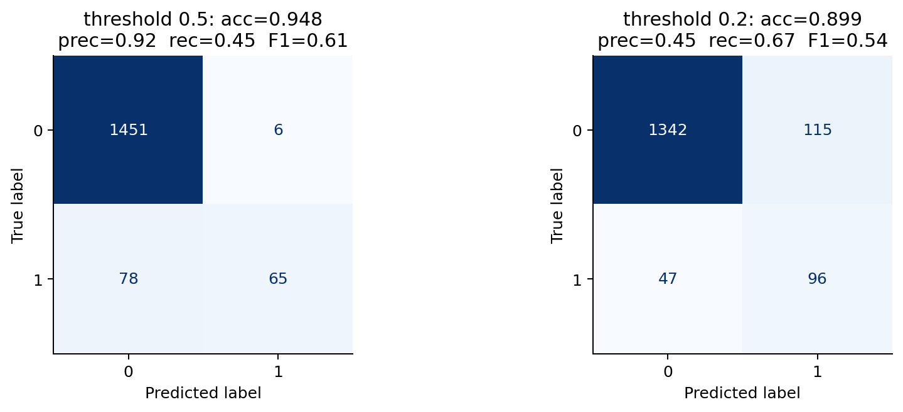
12.3 The precision–recall trade-off
Lowering \(\tau\) flags more examples: recall goes up (never down), precision usually goes down. By varying the threshold you can improve precision or recall, but not both. So one of the two alone can be gamed: flag everything and recall is 1; flag only the surest case and precision is (usually) 1. Report both, or combine them with \(F_1 = \frac{2}{1/\text{Rec} + 1/\text{Prec}}\): widely used and good for comparing, reasonable on imbalanced problems, but a low \(F_1\) alone does not say which kind of error the model makes.
taus = np.linspace(0.01, 0.99, 99)
prec = [precision_score(yte, p_te >= t, zero_division=1) for t in taus]
rec = [recall_score(yte, p_te >= t) for t in taus]
f1 = [f1_score(yte, p_te >= t) for t in taus]
plt.figure(figsize=(6.5, 3.6))
plt.plot(taus, prec, label="precision"); plt.plot(taus, rec, label="recall"); plt.plot(taus, f1, label="$F_1$", lw=2)
plt.axvline(taus[int(np.argmax(f1))], color="gray", ls="--", lw=1)
plt.xlabel(r"threshold $\tau$"); plt.legend(); plt.title("Metrics vs. threshold (dashed: best $F_1$)")
plt.tight_layout(); plt.show()
print(f"best F1 = {max(f1):.3f} at threshold {taus[int(np.argmax(f1))]:.2f}")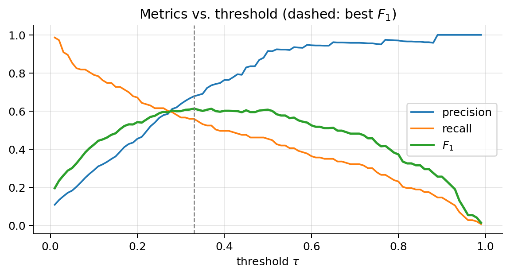
best F1 = 0.613 at threshold 0.3312.4 Moving the threshold
Try it. 900 legit claims and 100 frauds with their predicted probabilities (histogram), the confusion matrix and the ROC curve (AUC 0.948) with the current threshold as a red dot. At \(\tau = 0.5\): recall 0.84, precision 0.459, 99 false alarms (FPR 0.110), accuracy 0.885. Lower it to 0.2: every fraud is caught (recall 1.000) but precision falls to 0.195, with 413 false alarms (FPR 0.459). Raise it to 0.8: precision 0.829, recall only 0.340, frauds slip through. At 0.05 almost every claim is flagged: FPR 0.900, and precision 0.110 is barely above the 10 % positive rate.
12.5 ROC curve
The ROC curve (receiver operating characteristic) plots TPR (recall) against FPR for every threshold \(\tau\) on a single graph, from \(\tau\) above every score (nothing flagged: point \((0,0)\)) down to \(\tau\) below every score (everything flagged: point \((1,1)\)).
- A model with random scores lies on the diagonal, whatever the class balance: flagging a random fraction \(q\) of the claims catches a fraction \(q\) of the positives and bothers a fraction \(q\) of the negatives.
- A perfect classifier goes through \((0,1)\).
- It is good for comparing classifiers, and for questions such as “what TPR can I get if the FPR must stay at 0.02?”.
- With very rare positives it can look too optimistic: the FPR is divided by a huge number of negatives, so thousands of false alarms are a small FPR. Look at the PR curve too (sections 12.7 and 15.5).
AUC is the area under the ROC curve: 0.5 for random scores, 1 for a perfect ranking (and below 0.5 when the ranking is inverted). It summarises the ranking quality over all thresholds in one number (section 12.6 explains what it means).
A model where everything can be computed: the binormal ROC. Suppose the scores of the negatives are \(\mathcal{N}(0,1)\) and those of the positives \(\mathcal{N}(d,1)\): \(d\) is the separation. At threshold \(t\),
\[ \text{FPR}(t) = P(S^- > t) = 1 - \Phi(t), \qquad \text{TPR}(t) = P(S^+ > t) = 1 - \Phi(t-d), \]
and, anticipating section 12.6 (AUC = probability that a random positive outscores a random negative), with \(S^+\) and \(S^-\) independent:
\[ \begin{aligned} \text{AUC} &= P(S^+ > S^-) = P(S^+ - S^- > 0) && \text{(rearrange)}\\ &= P\big(\mathcal{N}(d, 2) > 0\big) && \text{(difference of independent normals: means subtract, variances add)}\\ &= P\Big(Z > -\tfrac{d}{\sqrt2}\Big) = \Phi\Big(\frac{d}{\sqrt2}\Big) && \text{(standardise; symmetry of } \mathcal{N}(0,1)\text{)} \end{aligned} \]
For \(d = 2\): \(\Phi(1.414) = 0.921\); at \(t = 1\), FPR \(= 1-\Phi(1) = 0.16\) and TPR \(= 1 - \Phi(-1) = 0.84\). For \(d = 0\) the AUC is \(\Phi(0) = 0.5\); for \(d = 4\) it is \(\Phi(2.83) = 0.998\).
Try it. The widget draws exactly this model. With separation 2 and threshold 1 it shows TPR 0.84, FPR 0.16, AUC 0.921. Move the threshold down and the red dot slides up and to the right along the same curve; up, and it slides down and left: one curve, many thresholds. Separation 0 gives the diagonal (AUC 0.5); separation 4 hugs the top-left corner (AUC 0.998).
The ROC curves of our imbalanced problem, for the 5-feature model and for a weaker model that uses only the single most informative feature:
from sklearn.metrics import roc_curve, roc_auc_score
fpr, tpr, thr = roc_curve(yte, p_te)
auc = roc_auc_score(yte, p_te)
pos, neg = p_te[yte == 1], p_te[yte == 0]
auc_pairs = np.mean(pos[:, None] > neg[None, :])
print(f"AUC (area) = {auc:.4f} P(score of a positive > score of a negative) = {auc_pairs:.4f}")
# a weaker model: only the single most informative feature (chosen on the training set)
uni_auc = [roc_auc_score(ytr, Xtr[:, j]) for j in range(Xtr.shape[1])]
wk = [int(np.argmax(np.abs(np.array(uni_auc) - 0.5)))]
clf_weak = LogisticRegression().fit(Xtr[:, wk], ytr)
fpr_w, tpr_w, _ = roc_curve(yte, clf_weak.predict_proba(Xte[:, wk])[:, 1])
fig, axes = plt.subplots(1, 2, figsize=(11, 4))
axes[0].plot(fpr, tpr, lw=2, label=f"5 features, AUC={auc:.3f}")
axes[0].plot(fpr_w, tpr_w, lw=2, label=f"1 feature, AUC={roc_auc_score(yte, clf_weak.predict_proba(Xte[:, wk])[:, 1]):.3f}")
axes[0].plot([0, 1], [0, 1], "k--", lw=1, label="random, AUC=0.5")
for t in [0.5, 0.2]:
k = np.argmin(np.abs(thr - t)); axes[0].plot(fpr[k], tpr[k], "o", ms=8, label=rf"$\tau={t}$")
axes[0].set_xlabel("FPR"); axes[0].set_ylabel("TPR (recall)"); axes[0].legend(loc="lower right"); axes[0].set_title("ROC curve")
axes[1].hist(neg, bins=40, alpha=0.6, density=True, label="negatives"); axes[1].hist(pos, bins=40, alpha=0.6, density=True, label="positives")
axes[1].set_xlabel(r"predicted $p$"); axes[1].set_title("Score distributions: AUC measures their overlap"); axes[1].legend()
plt.tight_layout(); plt.show()AUC (area) = 0.8788 P(score of a positive > score of a negative) = 0.8788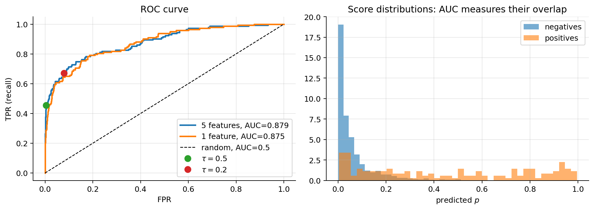
12.6 What AUC means: a proof
Take one positive and one negative at random. AUC is the probability that the model gives the positive the higher score (ties count one half).
So AUC = 1: every fraud scores above every legit claim; AUC = 0.5: a coin toss, the scores carry no information; AUC = 0.8: “8 times out of 10 the fraud comes out on top”. No threshold is involved: AUC grades the ordering of the scores. That is why it is good for comparing models, why it does not change under any increasing transformation of the scores, and why it says nothing about what happens at the one threshold you will actually use, nor about calibration.
Proof. Let the \(N_+\) positives have scores \(a_1,\dots,a_{N_+}\) and the \(N_-\) negatives \(b_1,\dots,b_{N_-}\). For a threshold \(\tau\) (flag when score \(\ge\tau\)),
\[ \text{TPR}(\tau) = \frac{1}{N_+}\#\{i : a_i \ge \tau\},\qquad \text{FPR}(\tau) = \frac{1}{N_-}\#\{j : b_j \ge \tau\}. \]
Sweep \(\tau\) from \(+\infty\) down to \(-\infty\), visiting the scores in decreasing order, and join the points \((\text{FPR},\text{TPR})\) with straight segments (this is how roc_curve and roc_auc_score build the curve).
- Assume first that no score is shared. When \(\tau\) passes a positive’s score, TPR increases by \(1/N_+\) and FPR does not change: a vertical step, which adds no area.
- When \(\tau\) passes a negative \(b_j\), FPR increases by \(1/N_-\) and TPR does not change: a horizontal step. The area under it is a rectangle of width \(1/N_-\) and height the current TPR, which is the fraction of positives already flagged, i.e. with a score above \(b_j\): \(\frac{1}{N_+}\#\{i: a_i > b_j\}\).
- Summing the rectangles over all negatives,
\[ \text{AUC} = \sum_{j=1}^{N_-}\frac{1}{N_-}\cdot\frac{1}{N_+}\#\{i : a_i > b_j\} = \frac{1}{N_+N_-}\sum_{i=1}^{N_+}\sum_{j=1}^{N_-}\mathbb{1}[a_i > b_j], \]
the fraction of (positive, negative) pairs ranked correctly. 4. With ties: if \(k\) positives and \(l\) negatives share one score, \(\tau\) passes them at once and the curve moves diagonally by \((l/N_-,\,k/N_+)\). The trapezoid under that segment has area \(\frac{l}{N_-}\big(\text{TPR}_{\text{before}} + \frac{k}{2N_+}\big)\): the \(kl\) tied pairs count \(\tfrac12\) each.
Picking the positive and the negative uniformly at random, the double sum is exactly \(P(a > b) + \tfrac12 P(a = b)\). \(\blacksquare\)
The double sum is the Mann–Whitney \(U\) statistic divided by \(N_+N_-\), so AUC is also the effect size of the rank-sum test.
Try it. Seven fraud claims and 14 legit claims, so \(7\times 14 = 98\) pairs, of which the fraud scores higher in 94: AUC \(= 94/98 = 0.96\). Draw random pairs: each one is ranked correctly (green) or wrongly (red). After the three single pairs and one batch of 200, the fraud scored higher in 194 of the 203 draws, a fraction of \(194/203 = 0.96\): the AUC, up to sampling noise.
The code checks the three expressions on scores rounded to one decimal (so that there are many ties): the area computed by scikit-learn, the pair count with ties as one half, and the Mann–Whitney statistic from scipy.
pr_round = np.round(p_te, 1)
a_s, b_s = pr_round[yte == 1], pr_round[yte == 0]
pairs = np.mean((a_s[:, None] > b_s[None, :]) + 0.5 * (a_s[:, None] == b_s[None, :]))
U = stats.mannwhitneyu(a_s, b_s).statistic
print(f"rounded scores: roc_auc_score = {roc_auc_score(yte, pr_round):.4f} pairs (ties = 1/2) = {pairs:.4f} U / (N+ N-) = {U / (len(a_s) * len(b_s)):.4f}")
print(f"AUC of the unrounded scores: {auc:.4f} (rounding creates ties and loses a little ranking information)")rounded scores: roc_auc_score = 0.8533 pairs (ties = 1/2) = 0.8533 U / (N+ N-) = 0.8533
AUC of the unrounded scores: 0.8788 (rounding creates ties and loses a little ranking information)12.7 Precision–recall curve
Plots precision against recall for every threshold. The baseline is not a diagonal but the horizontal line at the positive rate \(\pi\): a classifier with random scores flags positives at the rate they occur, so its precision is \(\pi\). The curve is summarised by the average precision, \(\text{AP} = \sum_k (R_k - R_{k-1})\,P_k\) over the thresholds \(k\) in decreasing order (roughly the area under the curve). For rare positives, PR curves are more informative than ROC. At \(\pi\) = 1 %, out of 10,000 claims 100 are fraud and 9,900 legit; an FPR of 5 % means 495 false alarms, so even with recall 1 the precision is at most \(100/595 = 0.17\). The ROC point \((0.05, 1)\) looks excellent; the PR curve shows the problem.
from sklearn.metrics import precision_recall_curve, average_precision_score
pr, rc, _ = precision_recall_curve(yte, p_te)
pr_w, rc_w, _ = precision_recall_curve(yte, clf_weak.predict_proba(Xte[:, wk])[:, 1])
plt.figure(figsize=(6, 4))
plt.plot(rc, pr, lw=2, label=f"5 features, AP={average_precision_score(yte, p_te):.3f}")
plt.plot(rc_w, pr_w, lw=2, label=f"1 feature, AP={average_precision_score(yte, clf_weak.predict_proba(Xte[:, wk])[:, 1]):.3f}")
plt.axhline(yte.mean(), color="k", ls="--", lw=1, label=f"random (positive rate {yte.mean():.2f})")
plt.xlabel("recall"); plt.ylabel("precision"); plt.legend(); plt.title("Precision–recall curve")
plt.tight_layout(); plt.show()
12.8 Choosing the threshold, simply
The model gives every claim a score; the threshold is where you cut. Three ways to decide, all on the validation set (never on the test set, which must stay an unbiased estimate of the final performance, note 00):
- I have a budget. “We can investigate 5 % of the claims.” Sort the claims by score and flag the top 5 %: the threshold is simply the score at that rank. The threshold follows the budget, not the other way round.
- I have a requirement. “We must catch 90 % of the fraud”: lower the threshold until recall reaches 0.9, then stop. “No more than 2 % of legit claims may be bothered”: raise it until the FPR is 0.02. Read the point off the PR or ROC curve.
- I know the costs. A missed fraud costs 900 €, a useless investigation 100 €. Flag whenever the expected cost of flagging is lower (next section): \(\tau^* = \frac{100}{100+900} = 0.1\).
0.5 is only the right cut when both mistakes cost the same (and the probabilities are calibrated). With rare positives and expensive misses, the right cut is usually far below 0.5.
Xfit, Xval, yfit, yval = train_test_split(Xtr, ytr, test_size=0.33, stratify=ytr, random_state=0)
clf_v = LogisticRegression().fit(Xfit, yfit)
p_val, p_tst = clf_v.predict_proba(Xval)[:, 1], clf_v.predict_proba(Xte)[:, 1]
fpr_v, tpr_v, thr_v = roc_curve(yval, p_val)
print(f"validation set: {len(yval)} claims, {yval.sum()} frauds")
rules = {"budget: top 5 %": np.quantile(p_val, 0.95),
"recall >= 0.9": thr_v[np.argmax(tpr_v >= 0.9)], # first (highest) threshold reaching recall 0.9
"FPR <= 0.02": thr_v[np.where(fpr_v <= 0.02)[0][-1]], # lowest threshold keeping FPR <= 0.02
"costs: tau* = 0.1": 0.1, "default 0.5": 0.5}
print(f"{'rule (chosen on validation)':>28} | tau | test recall | test precision | test FPR | flagged")
for name, tau in rules.items():
fl = p_tst >= tau; tp_ = np.sum(fl & (yte == 1))
print(f"{name:>28} | {tau:.3f} | {tp_ / yte.sum():.2f} | {tp_ / max(fl.sum(), 1):.2f} | {np.sum(fl & (yte == 0)) / np.sum(yte == 0):.3f} | {fl.mean():.3f}")validation set: 792 claims, 71 frauds
rule (chosen on validation) | tau | test recall | test precision | test FPR | flagged
budget: top 5 % | 0.346 | 0.53 | 0.72 | 0.021 | 0.066
recall >= 0.9 | 0.019 | 0.96 | 0.13 | 0.616 | 0.646
FPR <= 0.02 | 0.282 | 0.58 | 0.61 | 0.036 | 0.084
costs: tau* = 0.1 | 0.100 | 0.78 | 0.30 | 0.179 | 0.233
default 0.5 | 0.500 | 0.45 | 0.91 | 0.004 | 0.044The rules give very different thresholds: choosing \(\tau\) is a business decision, not a statistical one. On the test set each rule delivers roughly, not exactly, what was asked on the validation set (test recall 0.96 for the requirement 0.9, test FPR 0.036 for 0.02, 6.6 % flagged for a budget of 5 %): a threshold tuned on a validation set with about 70 frauds is itself uncertain, so leave a margin or use more validation data. The table also shows the price of each requirement: to catch 90 % of the frauds this model must flag about two thirds of all claims.
12.9 The threshold from costs, slowly
One claim. The model says: probability of fraud \(= p\). Two possible actions. Write \(c_{FP}\) for the cost of investigating a legit claim and \(c_{FN}\) for the cost of paying a fraud.
- Flag it. With probability \(1-p\) it was legit and the investigation was wasted: \(\mathbb{E}[\text{cost of flagging}] = (1-p)\,c_{FP}\).
- Let it through. With probability \(p\) it was fraud and we pay for it: \(\mathbb{E}[\text{cost of not flagging}] = p\,c_{FN}\).
Flag when flagging is the cheaper option:
\[ \begin{aligned} (1-p)\,c_{FP} &< p\,c_{FN} && \text{(expected cost of flagging below that of not flagging)}\\ c_{FP} - p\,c_{FP} &< p\,c_{FN} && \text{(expand)}\\ c_{FP} &< p\,(c_{FP} + c_{FN}) && \text{(collect the } p \text{ terms on the right)}\\ p &> \frac{c_{FP}}{c_{FP}+c_{FN}} = \tau^* && \text{(divide by } c_{FP}+c_{FN} > 0\text{)} \end{aligned} \]
| \(c_{FP}\) | \(c_{FN}\) | \(\tau^*\) | reading |
|---|---|---|---|
| 100 | 100 | 0.50 | equal costs: the usual 0.5 |
| 100 | 400 | 0.20 | misses hurt 4×: cut lower |
| 100 | 900 | 0.10 | misses hurt 9×: flag at 10 % |
| 400 | 100 | 0.80 | false alarms hurt: cut higher |
Only the ratio of the costs matters (multiply both by any constant and \(\tau^*\) does not change). If correct decisions also have costs or gains (\(c_{TP}\) for a caught fraud, e.g. the investigation cost minus the money recovered; \(c_{TN}\) for a legit claim let through), the same algebra with \(p\,c_{TP} + (1-p)\,c_{FP} < p\,c_{FN} + (1-p)\,c_{TN}\) gives \(\tau^* = \frac{c_{FP} - c_{TN}}{(c_{FP}-c_{TN}) + (c_{FN}-c_{TP})}\).
This needs \(p\) to be a real probability (calibrated, section 14.7). The check below computes the average cost per claim as a function of \(\tau\), on the validation and on the test set. The empirical minimum on validation (printed) lies in a flat valley that contains \(\tau^* = 0.1\); on the test set, \(\tau^*\) costs about 34 € per claim against 45 € at \(\tau = 0.5\) and 80 € for flagging nothing.
c_FP, c_FN = 100, 900
tau_grid = np.linspace(0.01, 0.9, 90)
def avg_cost(p_, y_, tau):
fl = p_ >= tau
return (c_FP * np.sum(fl & (y_ == 0)) + c_FN * np.sum(~fl & (y_ == 1))) / len(y_)
cost_val = [avg_cost(p_val, yval, t) for t in tau_grid]; cost_tst = [avg_cost(p_tst, yte, t) for t in tau_grid]
plt.figure(figsize=(6.5, 3.4))
plt.plot(tau_grid, cost_val, label="validation"); plt.plot(tau_grid, cost_tst, label="test")
plt.axvline(0.1, color="C3", ls="--", lw=1, label=r"$\tau^*=0.1$"); plt.xlabel(r"threshold $\tau$"); plt.ylabel("average cost per claim (€)")
plt.legend(); plt.title("Expected cost is minimised near the theoretical threshold"); plt.tight_layout(); plt.show()
print(f"best threshold on validation: {tau_grid[np.argmin(cost_val)]:.2f}; test cost at tau*=0.1: {avg_cost(p_tst, yte, 0.1):.1f} €/claim,"
f" at 0.5: {avg_cost(p_tst, yte, 0.5):.1f} €/claim, flag nothing: {c_FN * yte.mean():.1f} €/claim")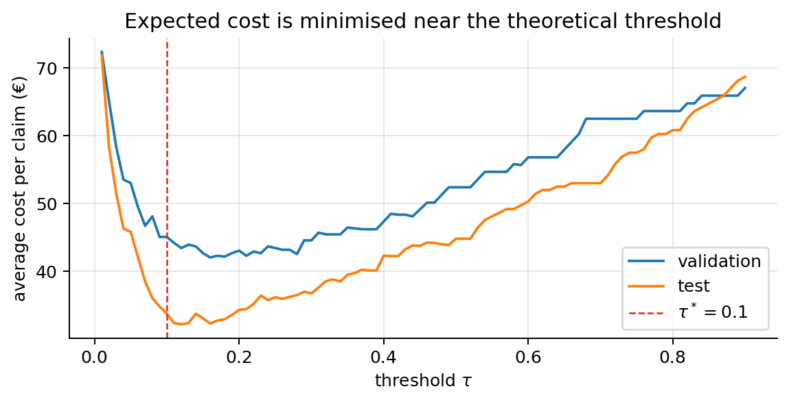
best threshold on validation: 0.16; test cost at tau*=0.1: 33.8 €/claim, at 0.5: 44.8 €/claim, flag nothing: 80.4 €/claim12.10 Probability metrics: log-loss, Brier score, calibration
Logistic regression gives probabilities, and often we use the numbers themselves (pricing, risk scores, reserves, expected cost). Two things to check:
- Log-loss (= \(J\) on the test set) and Brier score \(\frac{1}{m}\sum(p^{(i)} - y^{(i)})^2\). Lower is better; both reward probabilities that are both sharp and correct. Both are proper scoring rules: their expected value is minimised by reporting the true probability (for the Brier score, \(\mathbb{E}[(q-y)^2] = q^2 - 2qp + p\) for \(y\sim\text{Bernoulli}(p)\), whose derivative \(2q - 2p\) vanishes at \(q = p\)).
- Calibration: among all claims with predicted \(p\approx 0.3\), about 30 % should be fraud. A reliability diagram bins the predictions and plots the observed positive rate per bin against the mean prediction; a calibrated model lies on the diagonal. A curve flatter than the diagonal means over-confidence (predictions more extreme than reality; figure); a curve steeper than the diagonal means under-confidence (predictions squeezed towards the base rate).
Logistic regression fitted by maximum likelihood tends to be well calibrated (section 10 showed that on the training set the predictions average to the positive rate); SVMs, naive Bayes, trees and heavily regularised models often are not. In the example below the over-regularised model has almost the same AUC (the ranking barely changes) but its probabilities are squeezed towards the base rate: under-confident. AUC does not see calibration.
from sklearn.metrics import log_loss, brier_score_loss
from sklearn.calibration import calibration_curve
clf_reg = LogisticRegression(C=0.0003).fit(Xtr, ytr) # far too much regularisation
p_reg = clf_reg.predict_proba(Xte)[:, 1]
print(f"logistic (MLE) : log-loss={log_loss(yte, p_te):.3f} Brier={brier_score_loss(yte, p_te):.4f} AUC={roc_auc_score(yte, p_te):.3f}")
print(f"logistic, over-regular. : log-loss={log_loss(yte, p_reg):.3f} Brier={brier_score_loss(yte, p_reg):.4f} AUC={roc_auc_score(yte, p_reg):.3f}")
plt.figure(figsize=(5.5, 4.2))
for pp, name in [(p_te, "logistic regression (MLE)"), (p_reg, "over-regularised (C=0.0003)")]:
frac, meanp = calibration_curve(yte, pp, n_bins=8, strategy="quantile")
plt.plot(meanp, frac, "o-", label=name)
plt.plot([0, 1], [0, 1], "k--", lw=1, label="perfectly calibrated")
plt.xlabel("mean predicted probability"); plt.ylabel("observed fraction of positives"); plt.legend()
plt.title("Reliability diagram"); plt.tight_layout(); plt.show()logistic (MLE) : log-loss=0.185 Brier=0.0483 AUC=0.879
logistic, over-regular. : log-loss=0.286 Brier=0.0786 AUC=0.867
12.11 Scoring probabilities by hand
Four claims, the model’s probability of fraud \(p\), and what really happened. For \(y=1\) the log-loss term is \(-\ln p\); for \(y=0\) it is \(-\ln(1-p)\). The Brier term is always \((p-y)^2\).
| claim | \(y\) | \(p\) | log-loss term | Brier term |
|---|---|---|---|---|
| A | 1 | 0.90 | \(-\ln 0.90 = 0.11\) | \((0.90-1)^2 = 0.01\) |
| B | 1 | 0.60 | \(-\ln 0.60 = 0.51\) | \((0.60-1)^2 = 0.16\) |
| C | 0 | 0.20 | \(-\ln 0.80 = 0.22\) | \((0.20-0)^2 = 0.04\) |
| D | 0 | 0.95 | \(-\ln 0.05 = 3.00\) | \((0.95-0)^2 = 0.90\) |
\[ \text{log-loss} = \frac{0.11+0.51+0.22+3.00}{4} = 0.96, \qquad \text{Brier} = \frac{0.01+0.16+0.04+0.90}{4} = 0.28 . \]
- One confident mistake (D: 95 % sure of fraud, but legit) costs 3.00, more than the other three claims together. Log-loss punishes confident mistakes very hard (without bound); a Brier term can never exceed 1.
- Baseline “always say 0.5”: every log-loss term is \(\ln 2 = 0.69\) and every Brier term \(0.25\). Because of claim D, this model is worse than a coin flip on both.
- Accuracy with a 0.5 threshold: A and B are flagged and are fraud, C is not flagged and is legit, D is flagged but legit, so 3 of 4 are right (75 %). Accuracy cannot see how sure the model was. Use log-loss or Brier when the probability itself is used (prices, reserves, expected costs).
y4, p4 = np.array([1, 1, 0, 0]), np.array([0.90, 0.60, 0.20, 0.95])
print(f"log-loss = {log_loss(y4, p4):.4f} (terms {(-np.log(np.where(y4 == 1, p4, 1 - p4))).round(3)}), Brier = {brier_score_loss(y4, p4):.4f}")
print(f"coin flip: log-loss = {np.log(2):.4f}, Brier = 0.25; accuracy at 0.5 = {np.mean((p4 >= 0.5) == y4):.2f}")log-loss = 0.9588 (terms [0.105 0.511 0.223 2.996]), Brier = 0.2781
coin flip: log-loss = 0.6931, Brier = 0.25; accuracy at 0.5 = 0.7512.12 Which metric?
| Situation | Use |
|---|---|
| Balanced classes, equal error costs | accuracy (plus the confusion matrix) |
| Rare positives, care about the positives | precision, recall, \(F_1\), PR curve / AP |
| Compare rankers independent of the threshold | ROC AUC |
| The probability itself is used | log-loss, Brier score, reliability diagram |
| Known error costs | expected cost, with \(\tau^* = c_{FP}/(c_{FP}+c_{FN})\) |
13. More than two classes: one-vs-rest
With \(K\) classes, the simplest reduction to binary problems is one-vs-rest (one-vs-all): for each class \(k\), relabel the data with 1 for class \(k\) and 0 for the rest, and learn a binary classifier \(h_k\). To predict, run all \(K\) classifiers and pick the class with the highest \(h_k(\mathbf{x})\).
It works with any binary classifier, but the \(K\) outputs are fitted separately and do not sum to 1. Softmax regression does multiclass in one model with one loss and outputs a proper distribution: note 04, which also compares the two.
14. Assumptions: what they mean, how to check them, what to do
Logistic regression needs fewer assumptions than linear regression. There is no additive error term, so there is no normality and no homoscedasticity assumption: the Bernoulli variance \(p(1-p)\) is part of the model, and it changes with \(\mathbf{x}\) by design. (Constant variance is an assumption of linear regression’s standard errors, figure; see note 01.) Nor does it assume normally distributed features, or a linear relation between \(\mathbf{x}\) and \(p\) itself (that relation is S-shaped by construction).
What it does assume, and what each assumption protects:
| Assumption | What goes wrong if it fails | How to check | What to do |
|---|---|---|---|
| 14.1 Binary outcome, independent observations | SEs and p-values too small (over-confident inference); CV scores optimistic if groups leak | design; within-group correlation of residuals; naive vs cluster-robust SE | cluster-robust SE, group bootstrap, GroupKFold, mixed models / GEE |
| 14.2 Linear log-odds in each feature | biased probabilities in parts of the feature space; misleading odds ratios; worse predictions | binned empirical logit; Box–Tidwell test; partial residuals | transform (log, powers), splines, binning, interactions |
| 14.3 No strong multicollinearity | unstable coefficients, inflated SEs; predictions fine | correlation matrix, VIF | drop / combine features, PCA, L2 |
| 14.4 No (quasi-)complete separation | MLE does not exist: coefficients \(\to\pm\infty\), SEs explode, over-confident probabilities | diverging \(\lVert\boldsymbol{\theta}\rVert\), loss \(\to 0\), LP feasibility check | L2, Firth penalisation, merge categories, check for leakage |
| 14.5 Enough events per variable | biased (too large) coefficients, high variance, over-fitted probabilities, separation | count events / parameters; calibration slope; bootstrap | fewer parameters, penalisation, more data |
| 14.6 No overly influential points | a few points drive the fit | Pearson / deviance residuals, leverage, Cook’s distance | fix data errors, report with/without, robust or penalised fit |
| 14.7 Calibrated probabilities (when \(p\) is used) | wrong expected costs, prices, thresholds | reliability diagram, ECE, Brier decomposition | fix the model; Platt scaling, isotonic regression |
The last row is not an assumption of the MLE itself but of every use of the probabilities; it fails most often because of what we do to the model (weights, resampling, penalties, over-fitting).
Two helper functions used throughout this section: the Newton fit with optional L2 penalty and Firth correction (section 14.4 explains Firth), returning the estimate and the Wald covariance, and the stable log-likelihood.
def fit_logit(X, y, lam=0.0, firth=False, n_iter=50, tol=1e-8):
"""Newton / IRLS for logistic regression. lam: L2 penalty (not on the intercept); firth: Firth's correction.
Returns theta, the inverse information matrix and whether it converged."""
theta = np.zeros(X.shape[1]); Lm = np.eye(X.shape[1]); Lm[0, 0] = 0
for _ in range(n_iter):
p_ = sigmoid(X @ theta); s_ = p_ * (1 - p_)
I_inv = np.linalg.inv(X.T @ (s_[:, None] * X) + lam * Lm)
r_ = y - p_
if firth: # modified score: add h_i (1/2 - p_i) to each residual
r_ = r_ + s_ * np.einsum("ij,jk,ik->i", X, I_inv, X) * (0.5 - p_)
step = I_inv @ (X.T @ r_ - lam * Lm @ theta)
theta = theta + step
if np.abs(theta).max() > 30: return theta, I_inv, False # diverging (separation)
if np.abs(step).max() < tol: return theta, I_inv, True
return theta, I_inv, False14.1 Binary outcome and independent observations
What it says. Given \(\mathbf{x}^{(i)}\), each \(y^{(i)}\) is a Bernoulli variable with parameter \(\sigma(\boldsymbol{\theta}^\top\mathbf{x}^{(i)})\), and the \(y^{(i)}\) are independent of each other. (If \(y\) has more than two unordered categories, use softmax, note 04; if the categories are ordered, such as damage severity, an ordinal model; if each row records \(k\) successes out of \(n\) trials, a binomial model, i.e. logistic regression with \(n\) as a weight.)
Why it matters. Independence is what turned the likelihood into a product (section 5) and the gradient into a sum of independent terms, whose variance gave the standard errors (section 11). Real data are often clustered: several claims from the same policyholder, several photos of the same car, several years of the same policy. Observations within a cluster share unobserved factors, so they carry less independent information than their number suggests.
- Prediction: the point estimate \(\hat{\boldsymbol{\theta}}\) is still a sensible (population-averaged) fit, and predictions are fine. But a random train/test split puts members of the same cluster on both sides, so validation scores are optimistic.
- Inference: the Wald SEs are too small, the confidence intervals too narrow and the p-values too small. This is the main damage.
How to check. Mostly by knowing how the data were collected: is there a grouping variable (policyholder, vehicle, garage, region, time)? Then two statistics, computed below on synthetic data with 150 policyholders of 8 claims each, one feature \(x_g\) at policyholder level and one feature \(w\) at claim level, without and with a shared policyholder effect \(u_g\sim\mathcal{N}(0, 1.5^2)\) added to the log-odds:
- Naive vs cluster-robust SE. The cluster-robust (“sandwich”) covariance replaces the middle \(\mathcal{I}\) in \(\mathcal{I}^{-1}\mathcal{I}\mathcal{I}^{-1}\) (section 11) by the observed covariance of the per-cluster gradient contributions \(\mathbf{g}_c = \sum_{i\in c}(y^{(i)} - p^{(i)})\mathbf{x}^{(i)}\): \(\widehat{\mathrm{Var}}(\hat{\boldsymbol{\theta}}) = \mathcal{I}^{-1}\Big(\sum_{c}\mathbf{g}_c\mathbf{g}_c^\top\Big)\mathcal{I}^{-1}\). This allows any correlation inside a cluster and assumes independence only between clusters. If the robust SE is much larger than the naive one, the observations are not independent. A cluster bootstrap (resample whole policyholders with replacement and refit) gives a third, assumption-light estimate.
- Within-cluster correlation of the residuals. With the Pearson residuals \(r_i = (y^{(i)} - p^{(i)})/\sqrt{p^{(i)}(1-p^{(i)})}\) (mean 0, variance about 1 under the model), the variance of a cluster’s mean residual is \(\frac{1}{n_c}\) if the residuals are independent, and \(\frac{1+(n_c-1)\rho}{n_c}\) if they have correlation \(\rho\). So \(n_c\times\mathrm{Var}(\text{cluster means})\), the design effect, should be close to 1; a value \(D\) gives \(\hat\rho = (D-1)/(n_c-1)\).
rng_c = np.random.default_rng(11)
G, n_c = 150, 8 # 150 policyholders, 8 claims each
grp = np.repeat(np.arange(G), n_c)
def clustered_data(sd_u):
xg = rng_c.normal(0, 1, G)[grp]; w = rng_c.normal(0, 1, G * n_c); u = rng_c.normal(0, sd_u, G)[grp]
return np.c_[np.ones(G * n_c), xg, w], rng_c.binomial(1, sigmoid(-1 + 0.5 * xg + 0.5 * w + u))
def robust_cov(X, y, theta, I_inv, groups):
r_ = y - sigmoid(X @ theta)
gc = np.array([X[groups == c].T @ r_[groups == c] for c in np.unique(groups)]) # per-cluster score
return I_inv @ (gc.T @ gc) @ I_inv
res_c = {}
for label, sd_u in [("independent", 0.0), ("clustered", 1.5)]:
Xc_, yc_ = clustered_data(sd_u)
th_c_, I_inv_c, _ = fit_logit(Xc_, yc_)
se_naive = np.sqrt(np.diag(I_inv_c)); se_rob = np.sqrt(np.diag(robust_cov(Xc_, yc_, th_c_, I_inv_c, grp)))
boot = []
for _ in range(200): # cluster bootstrap: resample policyholders
pick = rng_c.integers(0, G, G); idx = (pick[:, None] * n_c + np.arange(n_c)).ravel()
boot.append(fit_logit(Xc_[idx], yc_[idx])[0])
p_c = sigmoid(Xc_ @ th_c_); r_p = (yc_ - p_c) / np.sqrt(p_c * (1 - p_c))
deff = n_c * np.var([r_p[grp == c].mean() for c in range(G)])
res_c[label] = (se_naive, se_rob, np.std(boot, axis=0))
sd_b = np.std(boot, axis=0)
print(f"{label:>11}: theta = {th_c_.round(2)}; design effect {deff:.2f} -> rho_hat = {(deff - 1) / (n_c - 1):.2f}\n"
f"{'':>13}SE of x_g: naive {se_naive[1]:.3f} | cluster-robust {se_rob[1]:.3f} | cluster bootstrap {sd_b[1]:.3f};"
f" SE of w: naive {se_naive[2]:.3f} | robust {se_rob[2]:.3f} | bootstrap {sd_b[2]:.3f}")
fig, axes = plt.subplots(1, 2, figsize=(10, 3.2), sharey=True)
for ax, (label, ses) in zip(axes, res_c.items()):
for k, (nm, se_) in enumerate(zip(["naive (X^T S X)^-1", "cluster-robust", "cluster bootstrap"], ses)):
ax.bar(np.arange(3) + 0.27 * (k - 1), se_, width=0.27, label=nm)
ax.set_xticks(range(3), ["intercept", "$x_g$ (policyholder)", "$w$ (claim)"]); ax.set_title(f"{label} observations")
axes[0].set_ylabel("standard error"); axes[1].legend(fontsize=8); plt.tight_layout(); plt.show()independent: theta = [-1.13 0.56 0.52]; design effect 1.08 -> rho_hat = 0.01
SE of x_g: naive 0.078 | cluster-robust 0.068 | cluster bootstrap 0.073; SE of w: naive 0.072 | robust 0.074 | bootstrap 0.076
clustered: theta = [-0.7 0.43 0.37]; design effect 2.81 -> rho_hat = 0.26
SE of x_g: naive 0.065 | cluster-robust 0.099 | cluster bootstrap 0.093; SE of w: naive 0.066 | robust 0.076 | bootstrap 0.079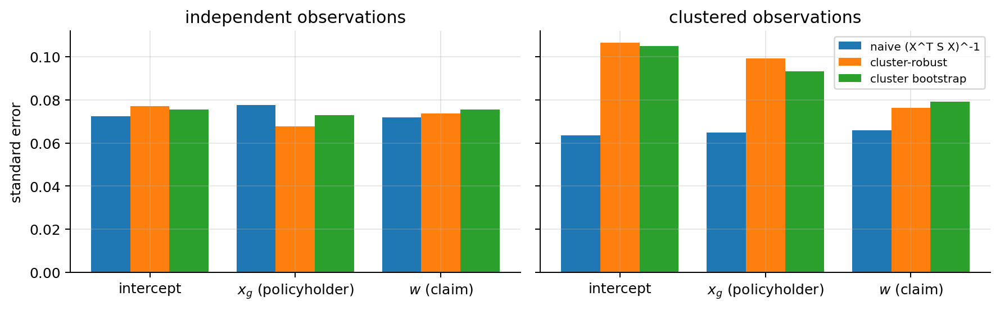
With independent data the three SEs agree (up to their own sampling noise) and the design effect is close to 1. With the shared policyholder effect (estimated within-policyholder correlation about 0.26), the naive SE of the policyholder-level feature is about a third too small; the robust and bootstrap SEs agree with each other. The claim-level feature \(w\) varies within each policyholder and is hurt much less: the damage is largest for features that are constant within clusters. (The coefficients themselves also shrink with clustering: the fitted model describes the population-averaged effect, which is smaller than the effect for a given policyholder.)
What to do.
- Report cluster-robust SEs (the sandwich above) or cluster-bootstrap intervals. Cheap and keeps the same fit. Needs a reasonable number of clusters (dozens at least).
- Validate with grouped splits (
GroupKFold, or a split by time for data that evolve), so that no policyholder is on both sides. - Model the dependence: mixed-effects logistic regression (a random intercept per policyholder) or GEE. More work and not in scikit-learn, but it gives the policyholder-level effects and the correct uncertainty.
- Aggregate to one row per cluster when the question is about clusters.
14.2 Linearity in the log-odds
What it says. For each numerical feature, the log-odds change linearly with it (holding the others fixed): \(\operatorname{logit} P(y=1\mid\mathbf{x}) = \theta_0 + \sum_j\theta_j x_j\). The relation to \(p\) is S-shaped, but on the logit scale it must be a straight line.
Why it matters. If the true effect of claim amount on the log-odds is, say, logarithmic, a linear term is a wrong shape: the probabilities are biased (too high at one end, too low in the middle), the single odds ratio “per k€” averages effects that differ along the range (interpretation), and discrimination and calibration suffer (prediction). It is the most common real failure of the model.
How to check. Three tools, from scratch, on 3,000 synthetic claims with two features: the claim amount \(x\) (log-normal, the feature we test) and a second feature \(w\) that enters linearly. In the left column the truth is linear in \(x\); in the right column it is linear in \(\log x\) (a diminishing effect), and we wrongly fit a linear term.
- Binned empirical logit. Cut \(x\) into quantile bins; in each bin compute \(\log\frac{k+0.5}{n-k+0.5}\) (\(k\) positives out of \(n\); the \(0.5\) avoids \(\log 0\)) and plot it against the bin’s mean \(x\). If the assumption holds, the points follow a straight line. It is a marginal check: it ignores the other features.
- Partial residuals. The IRLS working response of section 9, minus the fitted contributions of the other features, is \(r_i^{(x)} = \hat\theta_x x_i + \frac{y_i - p_i}{p_i(1-p_i)}\): the part of the linearised log-odds attributed to \(x\) plus what is left unexplained. Averaged per bin (with the IRLS weights \(p_i(1-p_i)\)), it traces the shape of the effect of \(x\) adjusted for the other features; the fitted straight line \(\hat\theta_x x\) should run through it.
- Box–Tidwell test. Suppose the true term is \(\theta_x x^\lambda\) instead of \(\theta_x x\) (\(x > 0\)). Expand around \(\lambda = 1\): \[ x^\lambda = x\,e^{(\lambda-1)\log x} \approx x\,\big(1 + (\lambda - 1)\log x\big) = x + (\lambda-1)\,x\log x \qquad \text{(first-order Taylor expansion of } e^{u}\text{)}, \] so \(\theta_x x^\lambda \approx \theta_x x + \gamma\, x\log x\) with \(\gamma = \theta_x(\lambda - 1)\). Add the feature \(x\log x\) to the model and test \(\gamma = 0\) with its Wald \(z\): a significant \(\gamma\) means the linear shape is wrong, and \(\hat\lambda = 1 + \hat\gamma/\hat\theta_x\) (with \(\hat\theta_x\) from the linear fit) suggests a power transform (\(\lambda\approx 0\) means \(\log x\)).
rng_l = np.random.default_rng(5)
m_l = 3000
def amount_data(shape):
x = rng_l.lognormal(1, 0.6, m_l); w = rng_l.normal(0, 1, m_l)
eta = (-3.0 + 0.35 * x if shape == "linear" else -4.5 + 2.0 * np.log(x)) + 0.8 * w
return x, w, rng_l.binomial(1, sigmoid(eta))
def binned(xv, vals, weights=None, bins=12):
edges = np.quantile(xv, np.linspace(0, 1, bins + 1)); idx = np.clip(np.digitize(xv, edges[1:-1]), 0, bins - 1)
wts = np.ones_like(xv) if weights is None else weights
return (np.array([xv[idx == b].mean() for b in range(bins)]),
np.array([np.sum(wts[idx == b] * vals[idx == b]) / np.sum(wts[idx == b]) for b in range(bins)]), idx)
def box_tidwell(x, w, y):
X_lin = np.c_[np.ones_like(x), x, w]; th_lin_, _, _ = fit_logit(X_lin, y)
th_bt, I_bt, _ = fit_logit(np.c_[X_lin, x * np.log(x)], y)
z_bt = th_bt[3] / np.sqrt(I_bt[3, 3])
return th_lin_, z_bt, 2 * stats.norm.sf(abs(z_bt)), 1 + th_bt[3] / th_lin_[1]
data_l = {shape: amount_data(shape) for shape in ["linear", "log"]}
fig, axes = plt.subplots(2, 2, figsize=(11, 6.4))
for col, (shape, (x, w, yl)) in enumerate(data_l.items()):
th_l, z_bt, p_bt, lam_bt = box_tidwell(x, w, yl)
print(f"truth {shape:>6} in x: fitted linear model theta = {th_l.round(3)}; Box–Tidwell z = {z_bt:+.2f}, p = {p_bt:.2g}, lambda_hat = {lam_bt:.2f}")
xc, _, idx = binned(x, yl.astype(float))
k_b = np.array([yl[idx == b].sum() for b in range(12)]); n_b = np.bincount(idx, minlength=12)
axes[0, col].plot(xc, np.log((k_b + 0.5) / (n_b - k_b + 0.5)), "o", label="binned empirical logit")
xs = np.linspace(x.min(), np.quantile(x, 0.995), 200)
axes[0, col].plot(xs, th_l[0] + th_l[1] * xs + th_l[2] * w.mean(), "C3", label="fitted linear log-odds (at mean $w$)")
p_l = sigmoid(np.c_[np.ones(m_l), x, w] @ th_l); s_l = p_l * (1 - p_l)
xc2, pres, _ = binned(x, th_l[1] * x + (yl - p_l) / s_l, weights=s_l)
axes[1, col].plot(xc2, pres, "s", color="C2", label="binned partial residuals")
axes[1, col].plot(xs, th_l[1] * xs, "C3", label=r"fitted $\hat\theta_x x$")
axes[0, col].set_title(f"truth linear in {'x' if shape == 'linear' else 'log x'}: Box–Tidwell z = {z_bt:+.1f}")
for r in range(2): axes[r, col].legend(fontsize=8); axes[r, col].set_xlabel("claim amount $x$ (k€)")
axes[0, 0].set_ylabel("log-odds"); axes[1, 0].set_ylabel("partial residual")
plt.tight_layout(); plt.show()truth linear in x: fitted linear model theta = [-2.923 0.331 0.872]; Box–Tidwell z = +0.62, p = 0.53, lambda_hat = 1.12
truth log in x: fitted linear model theta = [-3.544 0.404 0.747]; Box–Tidwell z = -5.36, p = 8.4e-08, lambda_hat = 0.23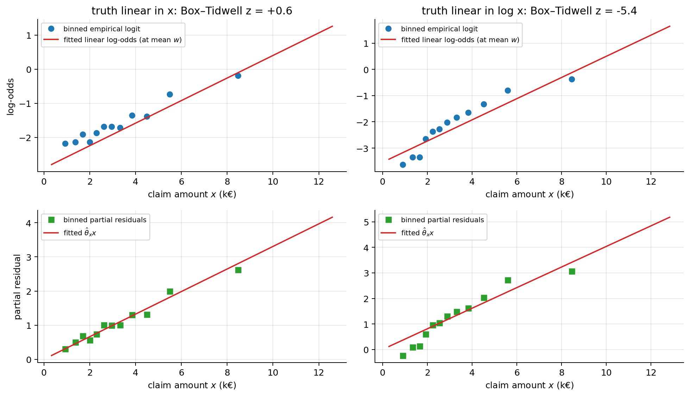
Left: points on the line, Box–Tidwell not significant (\(z = 0.62\)). Right: both plots bend (the effect flattens for large claims), the line misses the low and the high bins, the Box–Tidwell test rejects linearity decisively (\(z = -5.4\)), and \(\hat\lambda = 0.23\) is much closer to 0 (a log transform) than to 1. Caveat: with large \(m\) the test rejects departures too small to matter. Always look at the plots and at how much the fix improves held-out performance, not only at the p-value.
What to do.
- Transform the feature when theory or the diagnostics suggest a shape: \(\log x\) for amounts, incomes, durations; \(x^2\) for U-shapes; \(\hat\lambda\) from Box–Tidwell as a guide. Keeps one interpretable coefficient (“each doubling of the amount multiplies the odds by \(2^{\theta}\)”).
- Splines (
SplineTransformer): a flexible smooth curve made of piecewise polynomials, a few coefficients per feature. The safe default when there is no theory; interpret by plotting the fitted curve. - Binning (
KBinsDiscretizer, or business bands such as age groups): a step function. Simple and robust, but it throws information away and creates jumps at the cut points. - Interactions when the effect of one feature depends on another (\(x_1 x_2\) terms, note 03).
The fix, applied to the right-hand data: refit with \(\log x\) and with a cubic spline in \(x\), compare log-loss on a held-out half, and repeat the Box–Tidwell check on the transformed feature. Both fixes lower the held-out log-loss (the log, which matches the truth, slightly more than the spline), and the Box–Tidwell test no longer objects.
from sklearn.preprocessing import SplineTransformer
x, w, yl = data_l["log"]
half = np.arange(m_l) < m_l // 2
designs = {"linear in x": np.c_[x, w], "log x": np.c_[np.log(x), w],
"spline in x": np.c_[SplineTransformer(n_knots=5, degree=3).fit(x[half, None]).transform(x[:, None]), w]}
for name, F in designs.items():
mdl = LogisticRegression(C=1e6, max_iter=5000).fit(F[half], yl[half])
print(f"{name:>12}: held-out log-loss = {log_loss(yl[~half], mdl.predict_proba(F[~half])[:, 1]):.4f}")
_, z_bt2, p_bt2, _ = box_tidwell(np.log(x) - np.log(x).min() + 1, w, yl) # shifted so the feature is positive
print(f"Box–Tidwell on the (shifted) log x feature: z = {z_bt2:+.2f}, p = {p_bt2:.2f}") linear in x: held-out log-loss = 0.3311
log x: held-out log-loss = 0.3247
spline in x: held-out log-loss = 0.3253
Box–Tidwell on the (shifted) log x feature: z = +0.78, p = 0.4314.3 Multicollinearity
What it says. No feature is (nearly) a linear combination of the others. Exact collinearity makes \(\mathbf{X}^\top\mathbf{S}\mathbf{X}\) singular: the MLE is not unique. Near-collinearity makes it ill-conditioned.
Why it matters. Exactly as in linear regression (note 01, where this is treated in full): the data cannot tell the effects of correlated features apart, so their coefficients become unstable (large SEs, signs that flip between samples) while their sum, and therefore the predictions, stays well determined. It hurts interpretation and inference, not prediction (as long as the correlation persists in new data).
How to check. The variance inflation factor of feature \(j\) regresses it on the other features: \(\mathrm{VIF}_j = \frac{1}{1-R_j^2}\), with \(R_j^2\) the \(R^2\) of that regression. It measures by how much the variance of \(\hat\theta_j\) is inflated compared with uncorrelated features. It depends only on \(\mathbf{X}\), not on \(y\), so it is computed exactly as for linear regression. (Strictly, the logistic SEs come from \(\mathbf{X}^\top\mathbf{S}\mathbf{X}\), a weighted version, but with weights that vary smoothly the ordinary VIF is an excellent guide.) Rules of thumb: VIF > 5 is worth a look, > 10 is serious; caveat: a large VIF on a nuisance control variable is harmless.
Below: claim amount and the garage’s repair estimate, first independent, then with correlation 0.95. We compute the VIF from scratch, the Wald SEs, and the spread of the coefficients and of one prediction across 200 bootstrap samples.
def vif(F):
"""VIF of each column of F (features only, no intercept): 1 / (1 - R^2) of regressing it on the others."""
out = []
for j in range(F.shape[1]):
A = np.c_[np.ones(len(F)), np.delete(F, j, axis=1)]
resid = F[:, j] - A @ np.linalg.lstsq(A, F[:, j], rcond=None)[0]
out.append(1 / (resid.var() / F[:, j].var()))
return np.array(out)
rng_v = np.random.default_rng(2)
m_v = 800; se_v = {}
for rho in [0.0, 0.95]:
a1 = rng_v.normal(0, 1, m_v); a2 = rho * a1 + np.sqrt(1 - rho ** 2) * rng_v.normal(0, 1, m_v) # standardised amount, estimate
yv = rng_v.binomial(1, sigmoid(-1.5 + 0.5 * a1 + 0.5 * a2))
Xv = np.c_[np.ones(m_v), a1, a2]
th_v, I_v, _ = fit_logit(Xv, yv)
boot = np.array([fit_logit(Xv[b], yv[b])[0] for b in rng_v.integers(0, m_v, (200, m_v))])
x_new = np.array([1, 1.0, 1.0])
print(f"rho = {rho:4.2f}: VIF = {vif(Xv[:, 1:]).round(1)} theta = {th_v[1:].round(2)} Wald SE = {np.sqrt(np.diag(I_v))[1:].round(3)}"
f" bootstrap SD of theta = {boot[:, 1:].std(0).round(3)} SD of p(x_new) = {sigmoid(boot @ x_new).std():.3f}")
se_v[rho] = np.sqrt(np.diag(I_v))[1]
print(f"(SE of theta_1 at rho = 0.95 / SE at rho = 0)^2 = {(se_v[0.95] / se_v[0.0]) ** 2:.1f} vs VIF = {vif(Xv[:, 1:])[0]:.1f}")
combo = (a1 + a2) / 2
th_cb, I_cb, _ = fit_logit(np.c_[np.ones(m_v), combo], yv)
print(f"combined feature (a1 + a2)/2: theta = {th_cb[1]:.2f}, SE = {np.sqrt(I_cb[1, 1]):.3f}")rho = 0.00: VIF = [1. 1.] theta = [0.4 0.55] Wald SE = [0.096 0.096] bootstrap SD of theta = [0.099 0.098] SD of p(x_new) = 0.034
rho = 0.95: VIF = [10.1 10.1] theta = [0.4 0.56] Wald SE = [0.305 0.298] bootstrap SD of theta = [0.304 0.297] SD of p(x_new) = 0.026
(SE of theta_1 at rho = 0.95 / SE at rho = 0)^2 = 10.2 vs VIF = 10.1
combined feature (a1 + a2)/2: theta = 0.97, SE = 0.110With correlation 0.95 the VIFs are about 10, the SEs of the two coefficients are about three times larger, the bootstrap coefficients swing widely, and yet the predicted probability for a new claim is as stable as before. The squared ratio of the SEs with and without correlation matches the VIF, which is exactly what the VIF promises.
What to do (only if you need the individual coefficients):
- Drop one of the correlated features, or combine them into one meaningful feature (the mean of the standardised amount and estimate above: one coefficient with a small SE, whose meaning is “claim size”).
- PCA or other dimensionality reduction on the correlated block (loses direct interpretability).
- L2 regularisation stabilises the coefficients by shrinking them towards each other (note 03).
- If only prediction matters: nothing.
14.4 Complete and quasi-complete separation
What it says. There is no \(\boldsymbol{\theta}\) that classifies the training data perfectly. Complete separation: some hyperplane has every positive strictly on one side and every negative strictly on the other. Quasi-complete separation: the same with some points exactly on the hyperplane; typically a binary feature (or a category) whose “1” level contains only positives (or only negatives), while the rest overlaps.
Why it matters. Section 10 proved that under complete separation the MLE does not exist: \(J\to 0\) only as \(\lVert\boldsymbol{\theta}\rVert\to\infty\). Under quasi-complete separation the coefficient of the separating feature diverges while the others converge; \(J\) tends to a positive constant. Either way: coefficients meaningless (they depend on when the optimiser stopped), Wald SEs exploding (so “not significant” for the strongest effect in the data, the Hauck–Donner effect), and probabilities of exactly 0 or 1 for whole groups. For prediction, a separated training set with many features usually also means over-fitting.
How to check.
- Symptoms while fitting: coefficients that keep growing with more iterations, huge SEs, predicted probabilities of 0.000 or 1.000, a training log-loss going to 0, or scikit-learn warning that
lbfgsfailed to converge on a small problem. - A direct test for complete separation is a linear program: is there a \(\boldsymbol{\theta}\) with \((2y^{(i)}-1)\,\boldsymbol{\theta}^\top\mathbf{x}^{(i)} \ge 1\) for all \(i\)? (If some \(\bar{\boldsymbol{\theta}}\) separates strictly, scaling it makes every margin \(\ge 1\).)
scipy.optimize.linproganswers in milliseconds. - For categories: a cross-table of each categorical feature against \(y\); a cell with zero events (or zero non-events) is quasi-complete separation.
from scipy.optimize import linprog
def is_separable(X, y):
"""True if some theta has (2y - 1) theta^T x >= 1 for every example (complete separation)."""
sgn = 2 * y - 1
res = linprog(np.zeros(X.shape[1]), A_ub=-(sgn[:, None] * X), b_ub=-np.ones(len(y)), bounds=[(None, None)] * X.shape[1], method="highs")
return res.status == 0
rng_s = np.random.default_rng(4)
x_ov = np.r_[rng_s.normal(-1, 1, 20), rng_s.normal(1, 1, 20)]; x_sp = np.r_[rng_s.normal(-2, 0.7, 20), rng_s.normal(2, 0.7, 20)]
y_s = np.r_[np.zeros(20), np.ones(20)]
fig, axes = plt.subplots(1, 3, figsize=(15, 3.4))
for name, xs_ in [("overlapping", x_ov), ("separable", x_sp)]:
Xs_ = np.c_[np.ones(40), xs_]; th_s = np.zeros(2); marks = set(np.round(np.logspace(0, 5, 61)).astype(int))
its, norms, costs = [], [], []
for it in range(1, 100001):
th_s -= 1.0 * Xs_.T @ (sigmoid(Xs_ @ th_s) - y_s) / 40
if it in marks: its.append(it); norms.append(np.linalg.norm(th_s)); costs.append(-loglik(th_s, Xs_, y_s) / 40)
axes[0].scatter(xs_, y_s + (0.04 if name == "separable" else -0.04), s=15, label=name)
axes[1].semilogx(its, norms, label=name); axes[2].loglog(its, costs, label=name)
print(f"{name:>11}: LP says separable = {is_separable(Xs_, y_s)}; after 1e2, 1e3, 1e4, 1e5 GD steps: ||theta|| = "
+ ", ".join(f"{norms[its.index(k)]:.2f}" for k in [100, 1000, 10000, 100000]) + f"; J = {costs[-1]:.2e}")
axes[0].set_xlabel("$x$"); axes[0].set_ylabel("$y$"); axes[0].legend(); axes[0].set_title("two one-feature data sets")
axes[1].set_xlabel("GD iteration"); axes[1].set_ylabel(r"$\|\theta\|$"); axes[1].legend(); axes[1].set_title(r"separable: $\|\theta\|$ grows without bound")
axes[2].set_xlabel("GD iteration"); axes[2].set_ylabel(r"training $J$"); axes[2].legend(); axes[2].set_title(r"separable: $J\to 0$, never reaching it")
plt.tight_layout(); plt.show()overlapping: LP says separable = False; after 1e2, 1e3, 1e4, 1e5 GD steps: ||theta|| = 1.56, 1.56, 1.56, 1.56; J = 4.24e-01
separable: LP says separable = True; after 1e2, 1e3, 1e4, 1e5 GD steps: ||theta|| = 3.49, 5.84, 8.99, 12.53; J = 2.54e-05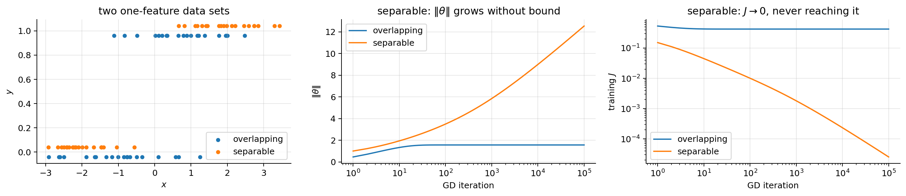
On overlapping data \(\lVert\boldsymbol{\theta}\rVert\) and \(J\) settle after a few hundred iterations. On separable data \(\lVert\boldsymbol{\theta}\rVert\) keeps growing, slowly (a few units per tenfold increase in the number of iterations; asymptotically like \(\log t\)), and \(J\) keeps falling towards 0 (about \(2.5\times10^{-5}\) after \(10^5\) steps) without ever reaching it.
Quasi-complete separation, the common case. 300 synthetic claims with a claim-size feature and two broker indicators. Broker B handled 12 claims, all fraudulent; broker C handled 40, of which only some are fraudulent. Newton’s method on the unpenalised likelihood:
rng_q = np.random.default_rng(5)
m_q = 300
size_q = rng_q.normal(0, 1, m_q)
broker_b = np.zeros(m_q); broker_b[:12] = 1
broker_c = np.zeros(m_q); broker_c[12:52] = 1
y_q = rng_q.binomial(1, sigmoid(-1.5 + 0.8 * size_q + 1.0 * broker_c)); y_q[broker_b == 1] = 1
Xq = np.c_[np.ones(m_q), size_q, broker_b, broker_c]
print(f"broker B: {int(y_q[broker_b == 1].sum())} frauds out of {int(broker_b.sum())}; broker C: {int(y_q[broker_c == 1].sum())} out of {int(broker_c.sum())};"
f" LP complete separation: {is_separable(Xq, y_q)}")
th_q = np.zeros(4)
print(" step | theta (intercept, size, B, C) | SE of theta_B | J")
for it in range(1, 21):
p_q = sigmoid(Xq @ th_q); I_q = Xq.T @ ((p_q * (1 - p_q))[:, None] * Xq)
th_q = th_q + np.linalg.solve(I_q, Xq.T @ (y_q - p_q))
if it in (1, 2, 5, 10, 15, 20):
p_q = sigmoid(Xq @ th_q); I_q = Xq.T @ ((p_q * (1 - p_q))[:, None] * Xq)
print(f" {it:3d} | {np.array2string(th_q.round(2), separator=', '):>30} | {np.sqrt(np.linalg.inv(I_q)[2, 2]):13.3g} | {-loglik(th_q, Xq, y_q) / m_q:.5f}")broker B: 12 frauds out of 12; broker C: 7 out of 40; LP complete separation: False
step | theta (intercept, size, B, C) | SE of theta_B | J
1 | [-1.28, 0.46, 3.31, 0.16] | 0.895 | 0.43110
2 | [-1.63, 0.76, 4.91, 0.3 ] | 1.42 | 0.41326
5 | [-1.72, 0.86, 8.15, 0.35] | 6.19 | 0.41079
10 | [-1.72, 0.86, 13.16, 0.35] | 75.3 | 0.41070
15 | [-1.72, 0.86, 18.16, 0.35] | 917 | 0.41070
20 | [-1.72, 0.86, 23.16, 0.35] | 1.12e+04 | 0.41070The broker B coefficient grows by about 1 at every step and its SE explodes, while the other coefficients and \(J\) settle: the signature of quasi-complete separation (the LP check says “no complete separation”, correctly).
What to do.
- Ask why first. Perfect prediction by one feature is often leakage: a feature recorded after the outcome (e.g. “claim sent to the fraud unit”). Then remove the feature. If it is a real but rare pattern, continue.
- L2 regularisation (scikit-learn’s default, \(C = 1\)): the penalty makes the minimiser finite. Good for prediction; the coefficient is shrunk, and its size depends on \(\lambda\).
- Firth’s penalised likelihood (Firth, 1993): maximise \(\ell(\boldsymbol{\theta}) + \frac12\log\det\mathcal{I}(\boldsymbol{\theta})\). In words: the penalty is the log-volume of the information matrix, which goes to \(-\infty\) as probabilities approach 0 or 1 (all the \(s_i\to 0\)), so the estimate always stays finite; it is equivalent to using Jeffreys’ prior, and it also removes most of the small-sample bias of the MLE (section 14.5). Its score equation is the usual one with each residual \(y_i - p_i\) replaced by \(y_i - p_i + h_i(\frac12 - p_i)\), where \(h_i\) is the leverage of section 14.6: every observation adds half a pseudo-observation to each class, in proportion to its leverage. Preferred for inference on small or sparse data. (It is the
firth=Trueoption offit_logitabove.) - Merge categories so that no cell is empty (here: broker B with broker C, “small brokers”), or drop the rare category, if that is acceptable for the question.
- Exact logistic regression or a Bayesian model with an informative prior, for small studies where inference on that coefficient matters.
th_l2, _, ok_l2 = fit_logit(Xq, y_q, lam=1.0)
th_fi, I_fi, ok_fi = fit_logit(Xq, y_q, firth=True)
sk_q = LogisticRegression(C=1.0).fit(Xq[:, 1:], y_q)
Xq_m = np.c_[np.ones(m_q), size_q, broker_b + broker_c] # merge B and C
th_mg, I_mg, ok_mg = fit_logit(Xq_m, y_q)
print(f"L2 (lambda = 1) : theta = {th_l2.round(2)} (sklearn C = 1: {np.r_[sk_q.intercept_, sk_q.coef_[0]].round(2)})")
print(f"Firth : theta = {th_fi.round(2)}, SE of theta_B = {np.sqrt(I_fi[2, 2]):.2f}, converged = {ok_fi}")
print(f"B and C merged (MLE): theta = {th_mg.round(2)}, SE of merged broker = {np.sqrt(I_mg[2, 2]):.2f}, converged = {ok_mg}")L2 (lambda = 1) : theta = [-1.59 0.75 2.89 0.18] (sklearn C = 1: [-1.59 0.75 2.89 0.18])
Firth : theta = [-1.7 0.84 5.22 0.38], SE of theta_B = 1.55, converged = True
B and C merged (MLE): theta = [-1.71 0.82 1.35], SE of merged broker = 0.37, converged = TrueAll three give finite answers. L2 matches scikit-learn (whose C is \(1/\lambda\)) and shrinks broker B’s effect strongly; Firth gives a large but finite effect with a usable SE; merging answers a slightly different question (the effect of a small broker).
14.5 Enough events per variable
What it says. The maximum-likelihood theory of section 11 is asymptotic: it needs enough information per parameter. For binary outcomes the information is limited by the rarer class: with 10,000 claims of which 30 are fraud, there are only 30 “events” to learn from. The classic rule of thumb is EPV = (number of events in the rarer class) / (number of parameters, excluding the intercept) \(\ge 10\) (Peduzzi et al., 1996).
Why it matters. With few events per parameter the MLE is biased away from zero (effects look larger than they are), has high variance, and the fitted probabilities are too extreme for new data (over-fitting: the calibration slope on new data is below 1). The chance of separation (section 14.4) also rises. So both inference and prediction suffer.
How to check. Count events and parameters (count every dummy of a categorical feature and every spline basis function). For prediction models, measure the calibration slope on validation data: refit a one-feature logistic regression of \(y\) on the model’s linear predictor \(\hat\eta = \hat{\boldsymbol{\theta}}^\top\mathbf{x}\); a slope \(b<1\) means the predictions should be shrunk towards the mean, i.e. the model over-fits. Caveats of the rule of thumb: EPV \(\ge 10\) is neither necessary nor sufficient. The required size also depends on the prevalence, the strength of the effects and the correlation between features, and prediction models usually need more (modern sample-size criteria, e.g. Riley et al., 2019, aim at a target calibration slope such as 0.9). Treat 10 as a minimum for a first look, 20 or more as comfortable.
The simulation below fixes a true model with 5 standard-normal features, each with coefficient 0.5, and prevalence about 23 %, and for EPV from 2 to 50 draws 200 training sets of the corresponding size. For each it fits the MLE, Firth and a fixed L2 penalty (\(\lambda = 5\)), and measures the calibration slope on a large independent test set.
rng_e = np.random.default_rng(3)
n_e = 5; th_e = np.r_[-1.5, np.full(n_e, 0.5)]
X_big = np.c_[np.ones(20000), rng_e.normal(size=(20000, n_e))]; y_big = rng_e.binomial(1, sigmoid(X_big @ th_e)); prev_e = y_big.mean()
def calib_slope(theta):
eta = X_big @ theta
return fit_logit(np.c_[np.ones_like(eta), eta], y_big)[0][1]
epvs = [2, 5, 10, 20, 50]; est = {k: {e: [] for e in epvs} for k in ["MLE", "Firth", "L2"]}; slope = {k: {e: [] for e in epvs} for k in est}
diverged = {e: 0 for e in epvs}
for e in epvs:
m_e = int(round(e * n_e / prev_e))
for _ in range(200):
Xe = np.c_[np.ones(m_e), rng_e.normal(size=(m_e, n_e))]; ye = rng_e.binomial(1, sigmoid(Xe @ th_e))
for k, kw in [("MLE", {}), ("Firth", {"firth": True}), ("L2", {"lam": 5.0})]:
th_k, _, ok = fit_logit(Xe, ye, **kw)
if ok: est[k][e].append(th_k[1]); slope[k][e].append(calib_slope(th_k))
elif k == "MLE": diverged[e] += 1
print(f"prevalence {prev_e:.3f}; true theta_1 = 0.5")
print(" EPV | m | MLE diverged | mean theta_1: MLE Firth L2 | SD theta_1 (MLE) | median calibration slope: MLE Firth L2")
for e in epvs:
print(f" {e:3d} | {int(round(e * n_e / prev_e)):4d} | {diverged[e]:3d}/200 | "
+ " ".join(f"{np.mean(est[k][e]):.3f}" for k in est) + f" | {np.std(est['MLE'][e]):.3f} | "
+ " ".join(f"{np.median(slope[k][e]):.2f}" for k in est))
fig, axes = plt.subplots(1, 2, figsize=(11, 3.4))
axes[0].boxplot([est["MLE"][e] for e in epvs], showfliers=False); axes[0].set_xticks(range(1, 6), epvs); axes[0].axhline(0.5, color="C3", ls="--", lw=1)
axes[0].set_xlabel("events per variable"); axes[0].set_ylabel(r"MLE $\hat\theta_1$ (true 0.5)"); axes[0].set_title("Few events: biased upwards and very variable")
for k in est: axes[1].plot(epvs, [np.median(slope[k][e]) for e in epvs], "o-", label=k)
axes[1].axhline(1, color="gray", ls="--", lw=1); axes[1].set_xscale("log"); axes[1].set_xticks(epvs, epvs)
axes[1].set_xlabel("events per variable"); axes[1].set_ylabel("median calibration slope"); axes[1].legend(); axes[1].set_title("Below 1: over-confident predictions")
plt.tight_layout(); plt.show()prevalence 0.229; true theta_1 = 0.5
EPV | m | MLE diverged | mean theta_1: MLE Firth L2 | SD theta_1 (MLE) | median calibration slope: MLE Firth L2
2 | 44 | 2/200 | 0.723 0.517 0.262 | 0.697 | 0.44 0.57 1.11
5 | 109 | 0/200 | 0.528 0.479 0.348 | 0.287 | 0.73 0.80 1.06
10 | 219 | 0/200 | 0.510 0.487 0.412 | 0.186 | 0.85 0.89 1.04
20 | 437 | 0/200 | 0.515 0.503 0.461 | 0.135 | 0.89 0.91 0.99
50 | 1093 | 0/200 | 0.501 0.497 0.479 | 0.082 | 0.94 0.95 0.99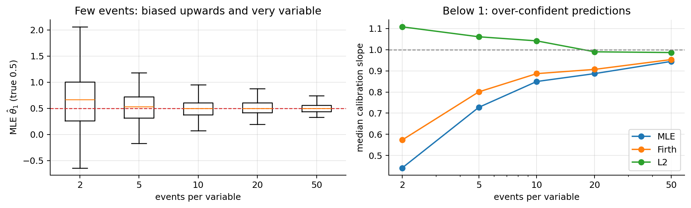
At EPV 2 the MLE of a coefficient whose true value is 0.5 averages 0.72 with a standard deviation of 0.70, 2 of the 200 training sets are separated, and the median calibration slope is 0.44 (the predictions must be shrunk a lot). The estimates settle around 0.5 and the slope approaches 1 as EPV grows (0.94 at EPV 50). Firth removes most of the bias of the coefficients (better for inference) but still over-fits; the L2 penalty shrinks the coefficients (biased towards 0, worse for inference) and brings the calibration slope near 1 (better for prediction). Same symptom, different remedies for the two goals.
What to do.
- Fewer parameters: choose features by subject knowledge before looking at the outcome; merge rare categories; prefer one transform to a many-knot spline. (Selecting features by their p-values on the same data makes things worse.)
- Penalise: L2 (or L1) with \(\lambda\) chosen by cross-validation for prediction (note 03); Firth for inference.
- Collect more events (a longer period, more regions), or, for rare events, a case–control design with the intercept correction of section 15.1.
- Report uncertainty honestly (bootstrap the whole modelling procedure; validate calibration).
14.6 Influential points
What it says. No single observation (or a handful) determines the fit. Logistic regression is less sensitive to outliers in \(y\) than least squares (the loss of a mistake grows linearly in the score, section 5, not quadratically), but a point with an extreme \(\mathbf{x}\) and a surprising label can still pull the boundary; so can data errors (a mislabelled claim, an amount typed in cents).
Why it matters. Conclusions (“amount matters”, “the odds ratio is 2”) that depend on one claim are fragile, for inference and prediction.
How to check. Three per-observation quantities, all from the fit:
- Pearson residual \(r_{P,i} = \frac{y_i - p_i}{\sqrt{p_i(1-p_i)}}\) (the raw residual divided by its standard deviation under the model) and deviance residual \(r_{D,i} = \operatorname{sign}(y_i - p_i)\sqrt{-2\big[y_i\log p_i + (1-y_i)\log(1-p_i)\big]}\) (the signed square root of the observation’s contribution to \(2mJ\), so \(\sum_i r_{D,i}^2 = 2mJ\), the deviance of note 02b). A point with \(|r| > 3\) is surprising under the model. For binary \(y\) the residuals take only two values at each \(p\), so residual-vs-fitted plots show two bands; look at the extremes, or average them in bins.
- Leverage. At convergence IRLS is a weighted least-squares fit (section 9), whose hat matrix is \(\mathbf{H} = \mathbf{S}^{1/2}\mathbf{X}(\mathbf{X}^\top\mathbf{S}\mathbf{X})^{-1}\mathbf{X}^\top\mathbf{S}^{1/2}\). Its diagonal \(h_{ii} = s_i\,\mathbf{x}^{(i)\top}(\mathbf{X}^\top\mathbf{S}\mathbf{X})^{-1}\mathbf{x}^{(i)}\) is the leverage: how much the point’s own label can move its own fitted value. The \(h_{ii}\) sum to the number of parameters \(q = n+1\) (the trace of a projection), so the average is \(q/m\) and \(h_{ii} > 2q/m\) is “high”. Unlike in linear regression, leverage depends on the fit through \(s_i = p_i(1-p_i)\): an extreme point that the model predicts with \(p\approx 0\) or 1 has low leverage.
- Cook’s distance, how far the whole coefficient vector moves when point \(i\) is removed. Derivation of the one-step approximation (Pregibon, 1981): start at \(\hat{\boldsymbol{\theta}}\) and take one Newton step on the data without \(i\).
\[ \begin{aligned} \nabla\ell_{(-i)}(\hat{\boldsymbol{\theta}}) &= \nabla\ell(\hat{\boldsymbol{\theta}}) - (y_i - p_i)\mathbf{x}^{(i)} = -(y_i - p_i)\mathbf{x}^{(i)} && \text{(the full gradient is } \mathbf{0} \text{ at } \hat{\boldsymbol{\theta}}\text{)}\\ \mathcal{I}_{(-i)} &= \mathcal{I} - s_i\mathbf{x}^{(i)}\mathbf{x}^{(i)\top} && \text{(remove the point's term from } \mathbf{X}^\top\mathbf{S}\mathbf{X}\text{)}\\ \mathcal{I}_{(-i)}^{-1}\mathbf{x}^{(i)} &= \frac{\mathcal{I}^{-1}\mathbf{x}^{(i)}}{1 - s_i\mathbf{x}^{(i)\top}\mathcal{I}^{-1}\mathbf{x}^{(i)}} = \frac{\mathcal{I}^{-1}\mathbf{x}^{(i)}}{1-h_{ii}} && \text{(Sherman–Morrison formula for a rank-one update)}\\ \hat{\boldsymbol{\theta}}_{(-i)} - \hat{\boldsymbol{\theta}} &\approx \mathcal{I}_{(-i)}^{-1}\nabla\ell_{(-i)}(\hat{\boldsymbol{\theta}}) = -\frac{(y_i - p_i)\,\mathcal{I}^{-1}\mathbf{x}^{(i)}}{1-h_{ii}} && \text{(one Newton step)} \end{aligned} \]
Cook’s distance measures that change in the metric of the information matrix, per parameter:
\[ D_i = \frac{(\hat{\boldsymbol{\theta}}_{(-i)} - \hat{\boldsymbol{\theta}})^\top\mathcal{I}\,(\hat{\boldsymbol{\theta}}_{(-i)} - \hat{\boldsymbol{\theta}})}{q} = \frac{(y_i-p_i)^2\,\mathbf{x}^{(i)\top}\mathcal{I}^{-1}\mathbf{x}^{(i)}}{q\,(1-h_{ii})^2} = \frac{r_{P,i}^2}{q}\cdot\frac{h_{ii}}{(1-h_{ii})^2}, \]
using \(\mathbf{x}^{(i)\top}\mathcal{I}^{-1}\mathbf{x}^{(i)} = h_{ii}/s_i\) and \((y_i - p_i)^2/s_i = r_{P,i}^2\). It is large when a point is both surprising (large residual) and has leverage. Rules of thumb: \(D_i > 4/m\) deserves a look, \(D_i > 1\) is very influential; caveat: these cut-offs are conventions, so compare each \(D_i\) with the rest of the distribution.
The demo: 100 claims with one feature. In the right-hand version, one claim with an extreme amount has the “wrong” label (it looks like a typing error: a huge claim marked as fraud, where the model says frauds are small claims).
rng_i = np.random.default_rng(8)
m_i = 100
x_i = rng_i.normal(0, 1, m_i); y_i = rng_i.binomial(1, sigmoid(-0.5 - 1.5 * x_i))
x_bad, y_bad = x_i.copy(), y_i.copy(); x_bad[0], y_bad[0] = 4.0, 1 # extreme amount, surprising label
def influence(X, y):
th, I_inv, _ = fit_logit(X, y)
p_ = sigmoid(X @ th); s_ = p_ * (1 - p_)
h = s_ * np.einsum("ij,jk,ik->i", X, I_inv, X) # leverages
r_p = (y - p_) / np.sqrt(s_)
r_d = np.sign(y - p_) * np.sqrt(-2 * (y * np.log(p_) + (1 - y) * np.log(1 - p_)))
cook = r_p ** 2 / X.shape[1] * h / (1 - h) ** 2
return th, I_inv, p_, h, r_p, r_d, cook
fig, axes = plt.subplots(2, 4, figsize=(16, 6))
for row, (name, xv, yv) in enumerate([("clean data", x_i, y_i), ("one bad point", x_bad, y_bad)]):
Xv = np.c_[np.ones(m_i), xv]; th, I_inv, p_, h, r_p, r_d, cook = influence(Xv, yv)
th_wo = fit_logit(Xv[1:], yv[1:])[0]; approx = th - (yv[0] - p_[0]) * I_inv @ Xv[0] / (1 - h[0])
k = int(np.argmax(cook))
print(f"{name:>13}: theta = {th.round(2)}; max Cook's D = {cook.max():.3f} at point {k} (4/m = {4 / m_i:.2f}); point 0: h = {h[0]:.3f} (2q/m = {4 / m_i:.2f}), r_D = {r_d[0]:+.2f}; "
f"sum of leverages = {h.sum():.2f}; sum r_D^2 = {np.sum(r_d ** 2):.2f} = 2 m J = {-2 * loglik(th, Xv, yv):.2f}")
print(f"{'':>15}refit without point 0: theta = {th_wo.round(2)}; one-step approximation = {approx.round(2)}")
gx = np.linspace(-3, 4.5, 200)
axes[row, 0].scatter(xv, yv, s=12, c=np.where(np.arange(m_i) == 0, "C3", "C0"))
axes[row, 0].plot(gx, sigmoid(th[0] + th[1] * gx), "k", label="all points"); axes[row, 0].plot(gx, sigmoid(th_wo[0] + th_wo[1] * gx), "C3--", label="without point 0")
axes[row, 0].legend(fontsize=8); axes[row, 0].set_ylabel(name)
for ax, vals, lab, cut in [(axes[row, 1], r_d, "deviance residual", 3), (axes[row, 2], h, "leverage $h_{ii}$", 2 * 2 / m_i), (axes[row, 3], cook, "Cook's distance", 4 / m_i)]:
ax.stem(vals, markerfmt=".", basefmt=" "); ax.axhline(cut, color="C3", ls="--", lw=1); ax.set_title(lab)
ax.plot(0, vals[0], "o", color="C3")
axes[row, 1].axhline(-3, color="C3", ls="--", lw=1)
for c in range(1, 4): axes[1, c].set_xlabel("observation")
axes[1, 0].set_xlabel("$x$"); plt.tight_layout(); plt.show() clean data: theta = [-0.59 -1.35]; max Cook's D = 0.067 at point 7 (4/m = 0.04); point 0: h = 0.034 (2q/m = 0.04), r_D = +0.56; sum of leverages = 2.00; sum r_D^2 = 103.37 = 2 m J = 103.37
refit without point 0: theta = [-0.6 -1.33]; one-step approximation = [-0.6 -1.33]
one bad point: theta = [-0.48 -1.01]; max Cook's D = 0.603 at point 0 (4/m = 0.04); point 0: h = 0.013 (2q/m = 0.04), r_D = +3.00; sum of leverages = 2.00; sum r_D^2 = 113.41 = 2 m J = 113.41
refit without point 0: theta = [-0.6 -1.33]; one-step approximation = [-0.58 -1.28]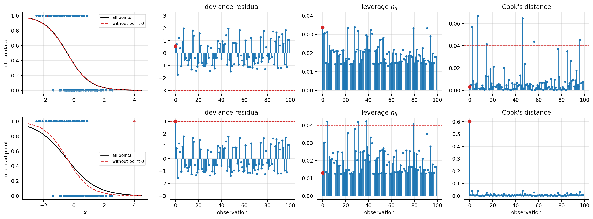
In the clean data nothing stands out: the largest Cook’s distance is above the \(4/m\) convention (with 100 points a few always are) but not separated from the rest. With the bad point, it has by far the largest deviance residual and a Cook’s distance about nine times the clean maximum, and removing it changes the slope from about \(-1.0\) to \(-1.3\); the one-step formula predicts the refit closely. Its leverage is small (\(h = 0.013\), below the average \(q/m = 0.02\)), although its amount is the most extreme: leverage depends on \(s_i = p_i(1-p_i)\), and the fit gives this point a small \(p_i\) (it predicts “legit” for such a large amount), which keeps \(s_i\) small. Its huge residual (\(r_D = 3.0\)) makes it influential anyway: in logistic regression, look at Cook’s distance, not at leverage alone.
What to do.
- Look at the point: data error (fix it or remove it with a documented reason), a different population (model it separately or add the feature that explains it), or a genuine rare case (keep it).
- Report the fit with and without the influential points when the conclusions depend on them.
- Robust alternatives: L2 regularisation limits how far any point can pull the coefficients; transforms of skewed features (log of amounts) reduce leverage at the source.
- Never delete points only because they are influential.
14.7 Calibration
What it says. Among the examples that get predicted probability \(p\), a fraction \(p\) is positive: \(P(y=1\mid \hat p = p) = p\) for every \(p\).
Why it matters. Every use of the probability as a number needs it: the cost threshold \(\tau^*\) of section 12.9, expected losses, premiums, reserves, risk scores shown to people. Ranking metrics (AUC) and accuracy at a tuned threshold do not need it. Unpenalised logistic regression on independent data with a correct functional form is calibrated on the training data by construction (section 10: \(\sum p_i = \sum y_i\)), but calibration on new data breaks with over-fitting (section 14.5), strong penalties (section 12.10), class weights and resampling (sections 15.1–15.2), and population shift between training and deployment.
How to check (from scratch):
- Reliability diagram: bin the predictions into \(B\) bins (equal width, or quantiles), and plot the observed positive rate \(\bar y_b\) against the mean prediction \(\bar p_b\) in each bin.
- Expected calibration error: the average gap, weighted by bin size, \(\mathrm{ECE} = \sum_{b=1}^B\frac{n_b}{m}\,\big|\bar y_b - \bar p_b\big|\). It depends on the binning; use it to compare models on the same data, not as an absolute truth.
- Brier score decomposition (Murphy, 1973). Suppose the forecasts take a few distinct values \(f_b\) (each used \(n_b\) times, with observed positive rate \(\bar y_b\)) and let \(\bar y\) be the overall positive rate. Split the Brier score by forecast value:
\[ \begin{aligned} \sum_{i\in b}(f_b - y_i)^2 &= \sum_{i\in b}\big((f_b - \bar y_b) + (\bar y_b - y_i)\big)^2 && \text{(add and subtract } \bar y_b\text{)}\\ &= n_b(f_b - \bar y_b)^2 + 2(f_b - \bar y_b)\sum_{i\in b}(\bar y_b - y_i) + \sum_{i\in b}(\bar y_b - y_i)^2 && \text{(expand the square)}\\ &= n_b(f_b - \bar y_b)^2 + 0 + n_b\,\bar y_b(1-\bar y_b) && (\textstyle\sum_{i\in b}(\bar y_b - y_i) = 0\text{; for 0/1 labels } \sum(y_i-\bar y_b)^2 = n_b\bar y_b - n_b\bar y_b^2) \end{aligned} \]
and, using \(\sum_b n_b\bar y_b = m\bar y\), one checks that \(\sum_b n_b\bar y_b(1-\bar y_b) = m\bar y(1-\bar y) - \sum_b n_b(\bar y_b - \bar y)^2\) (expand both sides: each equals \(m\bar y - \sum_b n_b\bar y_b^2\)). Dividing by \(m\):
\[ \text{Brier} = \underbrace{\sum_b \frac{n_b}{m}(f_b - \bar y_b)^2}_{\text{reliability (lower is better)}} \;-\; \underbrace{\sum_b\frac{n_b}{m}(\bar y_b - \bar y)^2}_{\text{resolution (higher is better)}} \;+\; \underbrace{\bar y(1-\bar y)}_{\text{uncertainty (fixed by the data)}} . \]
Reliability is a calibration error; resolution measures how much the forecasts separate groups with different rates (discrimination). With continuous forecasts, binning them makes the identity approximate; the code prints the small remainder.
Below: the unpenalised logistic regression on the imbalanced data of section 12 (calibrated) and the same model with class_weight="balanced" (section 15.2), which is badly calibrated. Then the two standard fixes, fitted with CalibratedClassifierCV (5-fold: the calibration map is learned on data the base model did not see):
- Platt scaling: \(p_{\text{cal}} = \sigma(a\,s + b)\), a one-feature logistic regression of \(y\) on the model’s score \(s\) (its log-odds). Two parameters: needs little data, and fixes shifts and over/under-confidence of a sigmoid shape. For a logistic model with a shifted intercept (the weighted model) it is exactly the right correction.
- Isotonic regression: the best non-decreasing step function from scores to probabilities (least squares, pool-adjacent-violators algorithm). Fixes any monotone distortion, but needs more data (it can over-fit with a few hundred examples).
from sklearn.calibration import CalibratedClassifierCV
def reliability(y_, p_, bins=10):
idx = np.clip((p_ * bins).astype(int), 0, bins - 1)
nb = np.bincount(idx, minlength=bins); ok = nb > 0
pb = np.bincount(idx, weights=p_, minlength=bins)[ok] / nb[ok]; yb = np.bincount(idx, weights=y_, minlength=bins)[ok] / nb[ok]
return pb, yb, nb[ok]
def ece(y_, p_, bins=10):
pb, yb, nb = reliability(y_, p_, bins); return np.sum(nb / len(y_) * np.abs(yb - pb))
def brier_decomposition(y_, p_, bins=10):
pb, yb, nb = reliability(y_, p_, bins); ybar = y_.mean()
rel, res, unc = np.sum(nb * (pb - yb) ** 2) / len(y_), np.sum(nb * (yb - ybar) ** 2) / len(y_), ybar * (1 - ybar)
return rel, res, unc, np.mean((p_ - y_) ** 2) - (rel - res + unc)
models_cal = {"MLE (C = 1e6)": LogisticRegression(C=1e6),
"class_weight='balanced'": LogisticRegression(C=1e6, class_weight="balanced"),
"balanced + Platt": CalibratedClassifierCV(LogisticRegression(C=1e6, class_weight="balanced"), method="sigmoid", cv=5),
"balanced + isotonic": CalibratedClassifierCV(LogisticRegression(C=1e6, class_weight="balanced"), method="isotonic", cv=5)}
fig, axes = plt.subplots(1, 2, figsize=(11, 4.2))
print(f"{'model':>24} | ECE | Brier = reliability - resolution + uncertainty (+ binning remainder) | AUC")
for name, mdl in models_cal.items():
p_c = mdl.fit(Xtr, ytr).predict_proba(Xte)[:, 1]
rel, res, unc, rem = brier_decomposition(yte, p_c)
print(f"{name:>24} | {ece(yte, p_c):.3f} | {np.mean((p_c - yte) ** 2):.4f} = {rel:.4f} - {res:.4f} + {unc:.4f} ({rem:+.4f}) | {roc_auc_score(yte, p_c):.3f}")
pb, yb, nb = reliability(yte, p_c)
ax = axes[0] if name in list(models_cal)[:2] else axes[1]
ax.plot(pb, yb, "o-", label=f"{name}, ECE {ece(yte, p_c):.3f}")
for ax, tt in zip(axes, ["Holds (MLE) vs violated (class weights)", "Fixes: Platt and isotonic"]):
ax.plot([0, 1], [0, 1], "k--", lw=1); ax.set_xlabel("mean predicted probability (10 equal-width bins)"); ax.set_ylabel("observed positive rate")
ax.legend(fontsize=8); ax.set_title(tt)
plt.tight_layout(); plt.show() model | ECE | Brier = reliability - resolution + uncertainty (+ binning remainder) | AUC
MLE (C = 1e6) | 0.023 | 0.0483 = 0.0022 - 0.0354 + 0.0814 (+0.0001) | 0.879
class_weight='balanced' | 0.275 | 0.1518 = 0.1040 - 0.0339 + 0.0814 (+0.0003) | 0.877
balanced + Platt | 0.024 | 0.0492 = 0.0022 - 0.0341 + 0.0814 (-0.0002) | 0.877
balanced + isotonic | 0.015 | 0.0484 = 0.0023 - 0.0349 + 0.0814 (-0.0003) | 0.879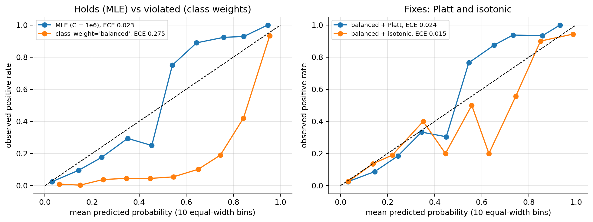
(Most predictions are below 0.2, so the upper bins hold few claims and their points are noisy; the ECE weights each bin by its size.) The class-weighted model predicts probabilities far above the observed rates (the curve lies well below the diagonal) with a large ECE and a large reliability term, yet its AUC is essentially the same as the MLE’s: the weights moved the probabilities, not the ranking. Platt scaling and isotonic regression bring the ECE back to the level of the MLE model and keep the AUC. The resolution term hardly changes between models (same ranking, same information); calibration lives in the reliability term.
What to do.
- Fix the cause if you can: do not use class weights or resampling when you need probabilities (or correct for them exactly, section 15.1); tune the penalty; fix the functional form (section 14.2).
- Recalibrate on held-out data: Platt scaling (small data, sigmoid-shaped distortions), isotonic regression (larger data, any monotone distortion), via
CalibratedClassifierCVor by fitting the map on a validation set. Recalibration does not change the ranking (both maps are increasing), so AUC is unchanged up to ties. - Monitor calibration after deployment: the positive rate drifts (fraud patterns change), and a model calibrated last year may not be this year.
15. Deep dive: what to do when the classes are imbalanced
Imbalanced classes appear in many domains: fraud detection, spam filtering, rare diseases, large claims. The problem: high accuracy just by predicting the majority class.
Symptom. Accuracy looks excellent, recall is low, most predicted probabilities are small, and at the default threshold 0.5 the model flags almost nothing.
How to detect it. Look at the class counts before anything else, and at the confusion matrix and the per-class recall, not at accuracy (section 12.2).
Why it happens (the math). Nothing is broken. A calibrated model on a population with 5 % fraud gives most claims probabilities well below 0.5, because most claims are unlikely to be fraud; the threshold 0.5 is simply the wrong cut when misses are expensive (section 12.9). The real limitations are the small number of events (section 14.5) and metrics that hide them. The remedies below are best understood through what they do to the intercept.
The toolbox of the slides:
- Resampling: undersampling the majority class (reduces the amount of data) or oversampling the minority (can cause over-fitting if exact copies are used).
- Improvements: Tomek links (remove majority points whose nearest neighbour is a minority point, cleaning the boundary) and SMOTE (create synthetic minority points between neighbours).
- Class weights in the loss (
class_weight="balanced"). - Metrics: precision, recall, \(F_1\), PR curves instead of accuracy.
- Resample only the training set. Validation and test keep the real class proportions.
15.1 What a different class rate does to the intercept: the prior-shift correction
Resampling changes the proportion of positives in the training data from the population rate \(\pi_t\) (the rate at deployment, “target”) to some \(\pi_s\) (“sample”), e.g. 50 % after undersampling. If the sampling depends only on the class (every fraud kept with the same probability, every legit claim with the same probability), then the class-conditional distributions \(p(\mathbf{x}\mid y)\) are the same in the sample and in the population. Write the log-odds with Bayes’ rule:
\[ \begin{aligned} \operatorname{logit} P(y=1\mid\mathbf{x}) &= \log\frac{P(y=1\mid\mathbf{x})}{P(y=0\mid\mathbf{x})} && \text{(definition of the logit)}\\ &= \log\frac{p(\mathbf{x}\mid y=1)\,\pi}{p(\mathbf{x}\mid y=0)\,(1-\pi)} && \text{(Bayes: } P(y\mid\mathbf{x}) = p(\mathbf{x}\mid y)P(y)/p(\mathbf{x})\text{; } p(\mathbf{x}) \text{ cancels)}\\ &= \underbrace{\log\frac{p(\mathbf{x}\mid y=1)}{p(\mathbf{x}\mid y=0)}}_{\text{same in sample and population}} + \log\frac{\pi}{1-\pi} && \text{(log of a product)} \end{aligned} \]
Subtract the sample version (\(\pi = \pi_s\)) from the population version (\(\pi = \pi_t\)): the first term cancels, and
\[ \boxed{\operatorname{logit} P_t(y=1\mid\mathbf{x}) = \operatorname{logit} P_s(y=1\mid\mathbf{x}) + \log\frac{\pi_t}{1-\pi_t} - \log\frac{\pi_s}{1-\pi_s}} \]
For a logistic regression, the log-odds are \(\boldsymbol{\theta}^\top\mathbf{x}\), so only the intercept changes: \(\theta_{0,t} = \theta_{0,s} + \log\frac{\pi_t(1-\pi_s)}{\pi_s(1-\pi_t)}\), and the slopes are the same. Worked number: with the training positive rate of the data of section 12, \(\pi_t = 0.0892\), undersampling to \(\pi_s = 0.5\) requires adding \(\log\frac{0.0892}{0.9108} - \log 1 = -2.32\) to the intercept. The same formula corrects a model trained in one period or region and deployed where the base rate differs (if \(p(\mathbf{x}\mid y)\) is stable).
pi_t = ytr.mean()
rng_u = np.random.default_rng(0)
pos_i, neg_i = np.where(ytr == 1)[0], np.where(ytr == 0)[0]
keep = np.r_[pos_i, rng_u.choice(neg_i, len(pos_i), replace=False)] # undersample to 50 / 50
clf_u = LogisticRegression(C=1e6).fit(Xtr[keep], ytr[keep]); pi_s = ytr[keep].mean()
shift = np.log(pi_t / (1 - pi_t)) - np.log(pi_s / (1 - pi_s))
p_u = clf_u.predict_proba(Xte)[:, 1]; p_uc = sigmoid(clf_u.decision_function(Xte) + shift)
clf_full = LogisticRegression(C=1e6).fit(Xtr, ytr); p_full = clf_full.predict_proba(Xte)[:, 1]
print(f"population rate pi_t = {pi_t:.3f}, sample rate pi_s = {pi_s:.2f}, intercept correction = {shift:+.3f}")
print(f"slopes, undersampled model: {clf_u.coef_[0].round(2)}\nslopes, full-data model : {clf_full.coef_[0].round(2)}")
for name, pp in [("undersampled, raw", p_u), ("undersampled, corrected", p_uc), ("full data", p_full)]:
print(f"{name:>24}: mean p on test = {pp.mean():.3f} (observed {yte.mean():.3f}), ECE = {ece(yte, pp):.3f}, log-loss = {log_loss(yte, pp):.3f}, AUC = {roc_auc_score(yte, pp):.3f}")population rate pi_t = 0.089, sample rate pi_s = 0.50, intercept correction = -2.324
slopes, undersampled model: [ 0.13 0.32 -1.2 -0.04 0.19]
slopes, full-data model : [ 0.11 0.47 -1.45 -0.22 0.12]
undersampled, raw: mean p on test = 0.367 (observed 0.089), ECE = 0.278, log-loss = 0.470, AUC = 0.876
undersampled, corrected: mean p on test = 0.095 (observed 0.089), ECE = 0.025, log-loss = 0.191, AUC = 0.876
full data: mean p on test = 0.100 (observed 0.089), ECE = 0.023, log-loss = 0.185, AUC = 0.879The raw undersampled model predicts a mean probability of 0.37 on a population with 9 % fraud; one line of correction restores the calibration. The slopes are close to those of the full-data model (not identical: undersampling threw away most negatives, so they are noisier), and the AUC is slightly lower for the same reason. Undersampling saves computation, not information.
15.2 Class weights are a weighted likelihood
class_weight multiplies each example’s loss by a weight \(w_{y^{(i)}}\) that depends on its class:
\[ J_w(\boldsymbol{\theta}) = -\frac1m\sum_{i=1}^m w_{y^{(i)}}\Big[y^{(i)}\log p^{(i)} + (1-y^{(i)})\log(1-p^{(i)})\Big], \qquad \nabla J_w = \frac1m\sum_{i=1}^m w_{y^{(i)}}\big(p^{(i)} - y^{(i)}\big)\mathbf{x}^{(i)} . \]
“Balanced” weights are \(w_k = \frac{m}{2\,m_k}\) (\(m_k\) examples in class \(k\)), so that each class carries half of the total weight. The intercept equation now reads \(\sum_i w_{y^{(i)}}p^{(i)} = \sum_i w_{y^{(i)}}y^{(i)}\): the weighted positive rate, which is \(0.5\), is matched instead of the real one. Weighting every positive by \(w_1\) is the same, in expectation, as having \(w_1\) copies of it: the weighted likelihood is the likelihood of a population with \(\pi_s = 0.5\) and the same \(p(\mathbf{x}\mid y)\). By section 15.1, if the model is correctly specified the weighted fit estimates the same slopes and an intercept shifted by \(-\log\frac{\pi_t}{1-\pi_t} = \log\frac{1-\pi_t}{\pi_t}\).
Two consequences:
- The probabilities of a class-weighted model are not calibrated (section 14.7). Correct them with the formula of 15.1, or recalibrate.
- Class weights ≈ moving the threshold. Predicting 1 when the weighted model says \(p_w \ge 0.5\) means \(\operatorname{logit}p_w \ge 0\), i.e. \(\operatorname{logit}p \ge \log\frac{\pi_t}{1-\pi_t}\) for the unweighted model: the same as using the unweighted model with threshold \(\tau = \pi_t\). Changing the threshold is simpler, keeps calibrated probabilities, and lets you use the cost-based \(\tau^*\).
clf_w = LogisticRegression(C=1e6, class_weight="balanced").fit(Xtr, ytr); p_w = clf_w.predict_proba(Xte)[:, 1]
print(f"intercept: unweighted {clf_full.intercept_[0]:.3f}, balanced {clf_w.intercept_[0]:.3f}, difference {clf_w.intercept_[0] - clf_full.intercept_[0]:.3f};"
f" log((1 - pi)/pi) = {np.log((1 - pi_t) / pi_t):.3f}")
print(f"slopes: unweighted {clf_full.coef_[0].round(2)}, balanced {clf_w.coef_[0].round(2)}")
print("confusion matrix [[TN FP] [FN TP]]: balanced at 0.5 ->", confusion_matrix(yte, p_w >= 0.5).tolist(),
" unweighted at tau = pi ->", confusion_matrix(yte, p_full >= pi_t).tolist())intercept: unweighted -2.138, balanced 0.130, difference 2.268; log((1 - pi)/pi) = 2.324
slopes: unweighted [ 0.11 0.47 -1.45 -0.22 0.12], balanced [ 0.15 0.37 -1.17 -0.06 0.13]
confusion matrix [[TN FP] [FN TP]]: balanced at 0.5 -> [[1129, 328], [30, 113]] unweighted at tau = pi -> [[1147, 310], [28, 115]]The shift of the intercept is close to \(\log\frac{1-\pi}{\pi}\) and the two confusion matrices are nearly identical. The slopes differ a little because the synthetic data are not exactly logistic (a misspecified model’s best approximation depends on which examples it is asked to fit best), which is also why weights can help a little for flexible, misspecified models. For logistic regression, prefer the threshold.
15.3 Undersampling, oversampling, SMOTE, and the resampling leak
- Random undersampling (15.1): fast, but discards information (higher variance).
- Random oversampling: duplicates minority examples. For logistic regression it acts like class weights (a duplicated example counts twice in the likelihood); for flexible models (trees, \(k\)-NN) exact copies invite over-fitting.
- SMOTE (Chawla et al., 2002): for a minority example \(\mathbf{x}_i\), pick one of its \(k\) nearest minority neighbours \(\mathbf{x}_{nn}\) and create \(\mathbf{x}_{\text{new}} = \mathbf{x}_i + u\,(\mathbf{x}_{nn} - \mathbf{x}_i)\) with \(u\sim\mathcal{U}(0,1)\), a random point on the segment between them. It fills the minority region instead of stacking copies, but it can create points in regions that belong to the majority, and it does not add information. Tomek links (above) clean the boundary afterwards.
The leak. Resampling must happen inside the training part of every split. If you resample the whole data set and then cross-validate:
- the validation folds no longer have the real class proportions, so precision, \(F_1\) and PR-AUC are computed on a 50/50 population and look far better than they will in production;
- the validation folds contain synthetic points (or duplicates) created from training points, and the training folds contain synthetic points created from validation points, so the model is partly tested on data it has seen.
Below, SMOTE implemented from scratch, then 5-fold cross-validation done the wrong way (SMOTE on everything, then split) and the right way (split, then SMOTE the training folds only), for logistic regression and for a 3-nearest-neighbour classifier.
from sklearn.neighbors import NearestNeighbors, KNeighborsClassifier
from sklearn.model_selection import StratifiedKFold
def smote(X, y, k=5, rng=None):
"""Oversample class 1 up to the size of class 0 with SMOTE (random points between minority neighbours)."""
Xm = X[y == 1]; n_new = int((y == 0).sum() - (y == 1).sum())
nbr = NearestNeighbors(n_neighbors=k + 1).fit(Xm).kneighbors(Xm, return_distance=False) # column 0 is the point itself
i = rng.integers(0, len(Xm), n_new); j = nbr[i, rng.integers(1, k + 1, n_new)]; u = rng.random((n_new, 1))
return np.r_[X, Xm[i] + u * (Xm[j] - Xm[i])], np.r_[y, np.ones(n_new, dtype=int)]
rng_sm = np.random.default_rng(0)
skf = StratifiedKFold(5, shuffle=True, random_state=0)
def scores(y_, s_):
return [roc_auc_score(y_, s_), average_precision_score(y_, s_), recall_score(y_, s_ >= 0.5), precision_score(y_, s_ >= 0.5, zero_division=0)]
print(f"{'model':>10} | {'procedure':>32} | ROC-AUC | AP | recall | precision (5-fold CV means)")
for name, make in [("logistic", lambda: LogisticRegression()), ("3-NN", lambda: KNeighborsClassifier(3))]:
Xs_all, ys_all = smote(Xi, yi, rng=rng_sm)
wrong = [scores(ys_all[va], make().fit(Xs_all[tr], ys_all[tr]).predict_proba(Xs_all[va])[:, 1]) for tr, va in skf.split(Xs_all, ys_all)]
right = []
for tr, va in skf.split(Xi, yi):
Xa, ya = smote(Xi[tr], yi[tr], rng=rng_sm)
right.append(scores(yi[va], make().fit(Xa, ya).predict_proba(Xi[va])[:, 1]))
for proc, sc in [("WRONG: SMOTE all, then CV", wrong), ("right: SMOTE inside train folds", right)]:
print(f"{name:>10} | {proc:>32} | " + " | ".join(f"{v:.3f}" for v in np.mean(sc, 0))) model | procedure | ROC-AUC | AP | recall | precision (5-fold CV means)
logistic | WRONG: SMOTE all, then CV | 0.861 | 0.884 | 0.749 | 0.796
logistic | right: SMOTE inside train folds | 0.852 | 0.623 | 0.742 | 0.274
3-NN | WRONG: SMOTE all, then CV | 0.972 | 0.950 | 0.979 | 0.900
3-NN | right: SMOTE inside train folds | 0.806 | 0.387 | 0.633 | 0.378For logistic regression the wrong procedure barely moves the ROC-AUC (0.861 against 0.852: a stable model and a class-ratio-free metric) but inflates AP (0.884 against 0.623) and precision (0.796 against 0.274) enormously: they were computed on a population with 50 % positives instead of 8 %. For the 3-NN classifier even the ROC-AUC is inflated (0.972 against 0.806), because each validation point has synthetic neighbours in the training folds that were built from it. Resample (and do every other data-dependent step: scaling, feature selection, target encoding) inside the training folds only: in scikit-learn, put it in a pipeline that is refitted per fold (the imbalanced-learn package provides a pipeline that accepts samplers).
When does resampling help at all? For logistic regression, rarely: it changes the intercept (which you then have to undo) and throws away (undersampling) or invents (SMOTE) data. For flexible models trained with losses or algorithms that ignore rare classes, weights or resampling can change what is learned. In all cases, choose the threshold on untouched validation data.
15.4 The threshold from costs
The principled answer to “the model flags nothing” is section 12.9: with calibrated probabilities, flag when \(p > \tau^* = \frac{c_{FP}}{c_{FP}+c_{FN}}\). Imbalance does not change the formula; it only makes the calibrated \(p\) small, so \(\tau^*\) must be small too. Compare, on the test set of this section, the average cost with \(c_{FP} = 100\) €, \(c_{FN} = 900\) €:
for name, pp, tau in [("unweighted, tau = 0.5", p_full, 0.5), ("unweighted, tau* = 0.1", p_full, 0.1),
("balanced weights, tau = 0.5", p_w, 0.5), ("undersampled + corrected, tau* = 0.1", p_uc, 0.1)]:
print(f"{name:>38}: {avg_cost(pp, yte, tau):6.1f} € per claim") unweighted, tau = 0.5: 43.8 € per claim
unweighted, tau* = 0.1: 34.2 € per claim
balanced weights, tau = 0.5: 37.4 € per claim
undersampled + corrected, tau* = 0.1: 35.1 € per claimThe unweighted, calibrated model with the cost threshold is as good as (or better than) the tricks, and it keeps interpretable probabilities.
15.5 PR-AUC vs ROC-AUC under imbalance
ROC-AUC is a property of the two score distributions (section 12.6) and does not depend on how many positives there are. Precision does: at a given threshold, \(\text{precision} = \frac{\pi\,\text{TPR}}{\pi\,\text{TPR} + (1-\pi)\,\text{FPR}}\) (divide TP and FP by \(m\)), which collapses as \(\pi\to 0\). The demo keeps the same classifier (binormal scores with separation \(d = 1.5\)) and changes only the prevalence.
fig, axes = plt.subplots(1, 2, figsize=(11, 4))
for prev in [0.5, 0.1, 0.01]:
n_pos = 2000; n_neg = int(n_pos * (1 - prev) / prev)
s_b = np.r_[rng.normal(1.5, 1, n_pos), rng.normal(0, 1, n_neg)]; y_b = np.r_[np.ones(n_pos), np.zeros(n_neg)]
f_, t_, _ = roc_curve(y_b, s_b); pr_b, rc_b, _ = precision_recall_curve(y_b, s_b)
axes[0].plot(f_, t_, label=f"prevalence {prev:.0%}: ROC-AUC {roc_auc_score(y_b, s_b):.3f}")
axes[1].plot(rc_b, pr_b, label=f"prevalence {prev:.0%}: AP {average_precision_score(y_b, s_b):.3f}")
print(f"binormal theory: ROC-AUC = Phi(1.5 / sqrt 2) = {stats.norm.cdf(1.5 / np.sqrt(2)):.3f} at any prevalence")
axes[0].plot([0, 1], [0, 1], "k--", lw=1); axes[0].set_xlabel("FPR"); axes[0].set_ylabel("TPR"); axes[0].legend(fontsize=8); axes[0].set_title("ROC: the same curve at every prevalence")
axes[1].set_xlabel("recall"); axes[1].set_ylabel("precision"); axes[1].legend(fontsize=8); axes[1].set_title("PR: the same model looks much worse when positives are rare")
plt.tight_layout(); plt.show()binormal theory: ROC-AUC = Phi(1.5 / sqrt 2) = 0.856 at any prevalence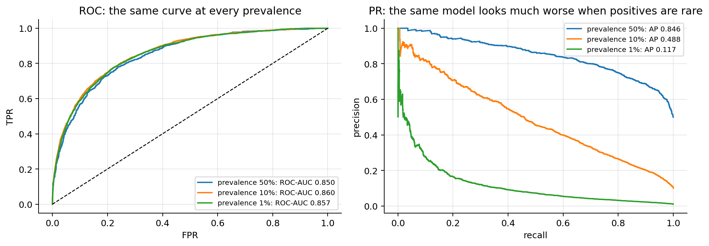
Both views are correct; they answer different questions. ROC-AUC: “how well does the model rank?”, comparable across populations. PR-AUC (AP): “if I act on the model’s top scores, how often am I right?”, which is what the fraud unit experiences. Under imbalance, report the PR curve and the precision at the operating point, and compare AP only between models evaluated on the same prevalence.
Summary of the deep dive. Keep the real class proportions in validation and test; evaluate with the confusion matrix, per-class recall, precision and PR curves; fit the plain (unweighted, possibly penalised) logistic regression; choose the threshold from costs or constraints on validation data; use weights or resampling only with a reason, only inside the training folds, and correct the intercept or recalibrate if you need probabilities.
16. Pros, cons and labs
Pros. A simple model and interpretable coefficients (odds ratios, with confidence intervals); computationally efficient (a convex problem solved in a few Newton steps); calibrated probabilities out of the box; a strong baseline.
Cons. Overly simplistic when the true boundary is not linear in the features (linearity assumption, section 14.2; fixed with features, or with other models); affected by influential points (section 14.6); correlated features (multicollinearity) make the coefficients unstable and hard to interpret, while the predictions can still be fine (drop or combine features, PCA, or regularisation, section 14.3). (The slides also list homoscedasticity: that is an assumption of linear regression’s standard errors, not of logistic regression.)
Labs. Lab 2: logistic regression from scratch: sigmoid, cross-entropy, gradient descent, decision boundary and metrics, then the same with scikit-learn. Lab 3: polynomial regression: underfitting, overfitting, train vs test error, Ridge and Lasso with cross-validation.
Summary
- Model: \(P(y=1\mid\mathbf{x}) = \sigma(\boldsymbol{\theta}^\top\mathbf{x})\); the log-odds are linear; \(e^{\theta_j}\) is the odds ratio per unit of \(x_j\); the boundary \(\boldsymbol{\theta}^\top\mathbf{x}=\operatorname{logit}\tau\) is a hyperplane.
- Loss: binary cross-entropy = negative Bernoulli log-likelihood (MLE).
- Gradient \(\frac1m\mathbf{X}^\top(\sigma(\mathbf{X}\boldsymbol{\theta})-\mathbf{y})\), same form as linear regression; Hessian \(\frac1m\mathbf{X}^\top\mathbf{S}\mathbf{X}\succeq 0\), so \(J\) is convex; no closed form; Newton’s method = IRLS converges in a few steps.
- Wald standard errors from \((\mathbf{X}^\top\mathbf{S}\mathbf{X})^{-1}\); confidence intervals for odds ratios by exponentiating the endpoints.
- With separable data the MLE does not exist; L2 or Firth fix it.
- Evaluate with the confusion matrix and threshold metrics, ROC/AUC (= probability that a positive outscores a negative), PR curve, log-loss, Brier and calibration; pick the metric that matches the cost of each error, and the threshold \(\tau^* = c_{FP}/(c_{FP}+c_{FN})\) on validation data.
- Assumptions: independent observations, linear log-odds, no strong collinearity, no separation, enough events per variable, no dominant points, calibrated probabilities when they are used. Each has a from-scratch check and a remedy (section 14).
- Imbalance: fix the threshold, not the data; if you resample or weight, do it inside the training folds and correct the intercept by \(\log\frac{\pi_t(1-\pi_s)}{\pi_s(1-\pi_t)}\).